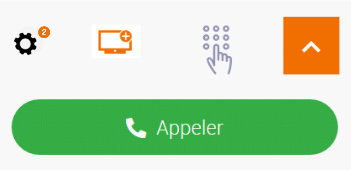
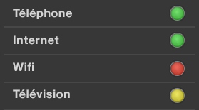
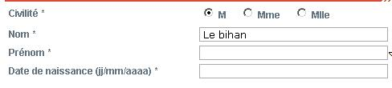

Recommandations accessibilité Orange pour le web
L’accessibilité, un avantage pour tous, une nécessité pour certains !
Définition de l’accessibilité web
C’est un service web utilisable par tous
- Personnes valides
- Seniors
- Personnes en situation de handicap (temporaire ou permanent)
et dans tous les contextes
- Avec tous types de matériel : navigateurs, PC, Mac, téléphones mobiles, tablettes
- Dans un contexte dégradé : mauvaise luminosité, touchpad en mobilité, etc.
- Avec des logiciels spécifiques de compensation du handicap
Organisation de ce site
Critères incontournables
Liste des critères principaux selon votre profil, basés sur un sous-ensemble des recommandations WCAG 2.1 niveau AA. Un bon moyen de prendre connaissance des principaux critères à respecter pour s’engager vers une démarche de mise en accessibilité progressive.
Ensemble des exigences
Section à destination des développeurs. Tout ce qu’il faut savoir pour coder accessible et pour effectuer les tests permettant de valider ses développements.
Méthodes et outils de test
Pour ceux qui veulent vérifier l’accessibilité de leurs pages avec des outils plus ou moins automatiques. Enfin, tout l’outillage méthodologique et technique pour évaluer ses pages.
Exemples
Des exemples didactiques pour certains types de composants ou d’éléments d’interface particulièrement délicats à rendre accessibles et fréquemment utilisés. Tout y est expliqué, il n’y a plus qu’à se laisser guider !
Ces exemples utilisent la librairie Boosted. Cette librairie basée sur Bootstrap permet de réaliser rapidement un site web responsive et accessible aux couleurs de la charte Orange.
Articles techniques
Des articles techniques sur la mise en place de l'accessibilité web.
Outils Orange open source
Présentation de la bibliothèque Boosted et du service Confort+.
Les CAPTCHAs et l'accessibilité
Introduction
Un CAPTCHA (« Completely Automated Public Turing-test to tell Computers and Humans Apart », en français « Test public de Turing complètement automatisé pour différencier les humains des ordinateurs ») est un test destiné à différencier un utilisateur d’un programme informatique. Il est utilisé notamment sur les formulaires pour se prémunir du SPAM.
Il existe différents types de CAPTCHA, les plus nombreux sont les CAPTCHAs visuels où on demande à l’utilisateur de saisir une série de lettres déformées affichées à l’écran.

Exemple de CAPTCHA visuel
Premier constat : le Captcha et les utilisateurs
Les CAPTCHAs posent souvent des difficultés même pour les utilisateurs les plus aguerris. En effet il est souvent nécessaire d’effectuer plusieurs tentatives avant de répondre correctement à un CAPTCHA. Pour certains utilisateurs la présence d’un CAPTCHA est tout simplement rédhibitoire. Par exemple, un utilisateur non-voyant ne peut pas renseigner un CAPTCHA visuel. Même si certains sites proposent des alternatives, comme un CAPTCHA audio en plus d’un CAPTCHA visuel, dans les faits c’est rarement concluant. C'est d'ailleurs la première source de difficultés citée par les utilisateurs malvoyants d'après le sondage réalisé par le site WebAIM fin 2017 :
Les CAPTCHA pointés du doigt par les utilisateurs malvoyants (sondage WebAIM 2017)
L’explosion des moyens de calcul permet aux bots et autres programmes informatiques d’être de plus en plus performants. Il est aujourd’hui simple de concevoir un programme permettant de deviner le texte inscrit dans une image ou vocalisé dans un fichier audio. Pour que le CAPTCHA reste efficace vis-à-vis des bots, il est donc nécessaire d’accentuer la déformation de l’image ou du son proposé par le CAPTCHA : cela accentue d’autant les difficultés pour l’utilisateur.
C’est pourquoi Google tente de trouver des alternatives pour différencier un utilisateur humain d’un robot. Ils proposent le « No Captcha », une simple case à cocher du point de vue de l’utilisateur. Celui-ci utilise des données annexes telles que la résolution de l’écran, le déplacement du pointeur de la souris ou le temps de saisie d'un formulaire…etc.

No CAPTCHA de Google
Bien que cette solution soit plus efficace, elle n’est pas aujourd’hui satisfaisante en termes d’accessibilité car en cas de doute, un CAPTCHA standard est affiché à l’écran. C’est souvent le cas pour un utilisateur qui ne peut pas utiliser une souris et qui navigue au clavier ou pour un utilisateur qui navigue à l’aide d’un lecteur d’écran (cas des personnes malvoyantes). Il faut donc toujours proposer un moyen de contact alternatif (email, téléphone….) dans le cas où le CAPTCHA ne pourrait pas être renseigné.
Entre les utilisateurs qui ne peuvent pas saisir le CAPTCHA, ceux qui n’y arrivent et ceux qui ne comprennent pas ce qu’il faut faire, la mise en place d’un CAPTCHA n’est pas anodine pour l’audience d’un site. Partant du principe que les CAPTCHAs posent des difficultés à de nombreux utilisateurs, la première recommandation est donc de ne pas utiliser de CAPTCHA.
Deuxième constat : Le CAPTCHA et la sécurité
Dans un article de Google publié en 2014, on apprend qu’une intelligence artificielle obtient un score de 99,8% pour résoudre des CAPTCHAs visuels parmi les plus difficiles, soit un meilleur score que celui obtenu par un « vrai » utilisateur ! Même chose dans un autre article de 2018 (Breaking CAPTCHA Using Machine Learning in 0.05 Seconds). Des services sont en effet capables de déterminer la police de caractères utilisée dans une image ou bien de deviner si l’image contient un objet (un chat, une voiture, un chapeau, etc.).
Face à ce constat (fuite des utilisateurs et sécurité incertaine), on en revient à notre première recommandation qui est de ne pas utiliser de CAPTCHA.
Les solutions préconisées
L’idée est donc dans un premier temps de déterminer les risques et de se poser les questions suivantes :
- Quels sont les risques en cas d’attaque ?
- Quel est le besoin réel, entre éliminer les requêtes des bots et apporter une solution sécurisée ?
En fonction des réponses, il s’agit de mettre en place la solution la plus adaptée.
HoneyPot et Time measuring, deux techniques simples à mettre en place pour identifier les bots
Si les risques sont limités, ces 2 techniques ont l’avantage d’être transparentes pour l’utilisateur. La première solution consiste à ajouter un champ masqué à l’écran dans le formulaire. Celui-ci ne sera donc jamais renseigné par un utilisateur. Coté serveur si on constate que ce champ a été renseigné, c’est qu’il s’agit d’un programme malveillant. La seconde technique consiste à mesurer le temps que l’utilisateur met pour saisir le formulaire. Si celui-ci s’avère très rapide, il s’agit très probablement d’un programme malveillant.
Des solutions anti-SPAM et liste noire pour éliminer les requêtes de bots
Il est également possible coté serveur de trier les informations reçues à l’aide d’un logiciel anti-SPAM qui supprime automatiquement les soumissions des logiciels malveillants en analysant les données et l’adresse IP à l’origine de la requête.
Un test logique ou mathématique textuel, appelé aussi Captcha textuel
Il s’agit de simples phrases demandant de recopier un mot, de résoudre une opération mathématique simple, etc.
« Recopier le mot : maison »
« Combien font deux plus deux ? »
« Quel animal fait miaou ? »
« De quelle couleur est le ciel ? »
A condition que les questions restent très simples, ce type de CAPTCHA pose très peu de difficulté aux utilisateurs. Comme il est précisé dans la notice du site acceDe Web une bonne pratique dans ce cas consiste à prévoir une solution de rafraîchissement, très utile pour les personnes déficientes cognitives.
Une vérification par email, SMS ou téléphone pour une sécurité renforcée
Cette solution consiste à envoyer un email, un SMS ou à téléphoner directement à l’utilisateur pour que celui-ci confirme la transaction en cliquant sur un lien ou en renseignant le code indiqué.
C'est à la fois à la fois plus contraignante pour l’utilisateur qui doit communiquer des informations personnelles et plus lourd à mettre en place mais c’est une solution très efficace quand un niveau de sécurité fort est nécessaire.
Pour récapituler
Il n’existe pas de solutions parfaites ni pour l’utilisateur, ni en termes de sécurité. L’idée est d’opter pour la technique la plus juste en fonction du service proposé. Il est important par ailleurs en cas d’attaque d’avoir des logs pour analyser et contrer les attaques ultérieures.
Les attributs ARIA qui peuvent vous sauver : aria-label, aria-labelledby et aria-describedby
Introduction
Nom et description accessible
Un nom accessible (pour aller plus loin, Le nom accessible en HTML) est l'information qui permet à l'aide technique (AT), par exemple, un lecteur d'écran ou une loupe logicielle, d'identifier l'élément (tag HTML) en question. Il peut être fourni par l'intitulé ou le contenu d'un élément, un attribut (par exemple, un attribut alt pour une image) ou par un élément associé (par exemple, une balise label pour un champ input).
Une description accessible est une information plus étendue qui est utilisée par l'AT lui permettant de compléter le nom accessible en précisant et rajoutant du sens là ou le nom accessible n'est pas suffisant.
Le comme la description accessible peuvent être visuellement perceptible ou pas (intitulé de lien : visible, alternative d'image : cachée et utilisable que par une AT...)
Les attributs ARIA : aria-label, aria-labelledby et aria-describedby
Trois attributs ARIA sont très bien supportés par les navigateurs et les AT: aria-label, aria-labelledby et aria-describedby. Ils permettent de rajouter de l'information à un élément HTML :
aria-label,aria-labelledbypermettent de donner un nom accessible à un élémentaria-describedbypermet de rajouter au nom accessible, si besoin, en sus, une description accessible à un élément
Cependant, ils ne fonctionnent bien qu'avec certains éléments :
- les éléments interactifs :
a(avec un attributhref),audioetvideo(avec un attributcontrols),input(sauf sitype="hidden"),select,buttonettextarea - les éléments
imgetiframe - les éléments possédant un rôle de landmark explicite, donc, avec un attribut
roleou un landmark implicite (une balise de structure HTML5 :header,footer,main,nav,asideetsection) - les éléments avec un des rôles de widget d'ARIA (27 pour ARIA 1.1).
Pour tout autre élément HTML, ces trois attributs ARIA ont un support peu robuste voire aléatoire selon les couples AT/navigateur, donc ne pas l'utiliser comme seul moyen de passer une information nécessaire.
Faut-il les utiliser et comment ?
Oui, on peut utiliser ces trois attributs ARIA sur les éléments avec lesquels cela fonctionne (voir ci-dessus) pour passer une information essentielle, spécifiquement aux AT.
Il faut savoir que aria-label doit contenir, comme valeur, une chaîne de caractères qui sera le nom accessible. Alors que pour aria-labelledby et aria-describedby, la valeur de cet attribut référence le ou les (séparée par un espace) id d'éléments (auto référencement possible) de la page dont le contenu sera utilisé comme nom accessible de l'élément portant l'attribut Aria.
Lorsqu'on utilise aria-label ou aria-labelledby sur un élément, le contenu ou l'intitulé de cet élément n'est plus restitué au AT, mais remplacé par le nom accessible (pour aria-label le contenu de cet attribut, pour aria-labelledby le contenu de l'élément référencé). Donc, seul, le nom accessible doit donner l'ensemble des informations nécessaires à l'AT et donc à l'utilisateur.
Important : l'aria-labelledby peut admettre plusieurs valeurs séparées par un espace et peut s'auto-référencer. Il fonctionne aussi avec du contenu généré par pseudo-classes CSS ::before ou ::after. On peut également référencer un contenu masqué visuellement par : CSS, visibility:hidden; ou display:none;, et avec l'attribut HTML5 hidden. Cependant, les bonnes pratiques demandent que si l'interface est telle qu'il n'est pas possible d'avoir une étiquette textuelle visible à l'écran, il est préférable d'utiliser aria-label plutôt que aria-labelledby.
Lorsque les deux attributs aria-labelledby et aria-label sont utilisés, les agents utilisateurs donnent la priorité (et donc sera le seul contenu restitué) à aria-labelledby lors du calcul de la propriété de nom accessible.
Quant à lui, aria-describedby va rajouter au nom accessible de l'élément, une description accessible, plus longue ou plus complète, logiquement, que le nom accessible.
Exemples
<button aria-label="accéder au code Hypertext markup language">html</button>
<h2 id="titre">Code de la page HTML<h2>
<button aria-label="accéder au code Hypertext markup language" aria-labelledby="titre">html</buttton>
<h3 id="titre">Code de la page de formulaire de connexion<h3>
<button aria-label="accéder au code HTML" aria-describedby="titre">html</buttton>
<h3 id="titre">Code de la page de formulaire de connexion<h3>
<button id="code" aria-describedby="code titre">Accéder au code HTML</buttton>
L'attribut aria-live et le role alert
Les utilisateurs qui naviguent à l'aide d'un lecteur d'écran ne sont pas toujours au courant des modifications apportées dans la page. Lorsqu'une information est actualisée ou lorsqu'un message apparaît il est parfois nécessaire de faire parler le lecteur d'écran pour informer l'utilisateur. Pour ce faire, le language ARIA dispose du role alert et de l'attribut aria-live.
Le role alert
Positionné sur un élément HTML, celui-ci permet d'indiquer au lecteur d'écran de vocaliser l'élément automatiquement lors de sa création. Veiller toutefois à utiliser ce role uniquement dans les cas appropriés comme il est clairement indiqué dans la documentation MDN de Mozilla. De fait de sa nature intrusive, le role alert doit être utilisé avec parcimonie et uniquement dans les situations où l’attention de l’utilisateur est immédiatement requise. Les changements dynamiques de moindre urgence devraient utiliser une méthode moins agressive, telle que aria-live="polite" ou autres rôles de zone live.
Pour déclencher une alerte, plusieurs méthodes sont possibles, avec des supports qui différent en fonction du couple navigateur et lecteur d'écran utilisé. Vous pouvez consulter l'article de Steve Faulkner (en anglais) à ce sujet.
Voici quelques exemples de méthodes qui sont bien supportées.
Créer un nouvel élément dans le DOM
On peut déclencher une alerte en insérant un nouvel élément dans le DOM via Javascript.
<span role="alert">Ceci est un message d'alerte.</span>Ajouter un role alert sur un élément existant
Le déclenchement d'une alerte peut également s'effectuer en ajoutant un role alert à un élément existant dynamiquement via Javascript.
document.getElementById('alert').addAttribute("role", "alert");
Utiliser innerHTML
Créer une alerte via la propriété innerHTML.
element.innerHTML = '<div role="alert">Ceci est une alerte</div>';
L'attribut aria-live
Positionné sur un élément HTML, l'attribut aria-live permet d'indiquer au lecteur d'écran que toute modification apportée à son contenu entraînera une vocalisation par le lecteur d'écran.
Trois valeurs sont possibles :
- Off : aucune vocalisation
- Polite : la vocalisation aura lieu lorsque le lecteur d'écran aura fini la tâche en cours
- Assertive : le lecteur d'écran interrompt la tâche en cours pour informer l'utilisateur
Il est fortement recommandé que l'attribut aria-live soit positionné sur l'élément dès le chargement de la page pour maximiser la compatibilité avec les différents couples navigateurs et lecteurs d'écran.
<span aria-live="polite">5 éléments sélectionnés</span>
Des attributs supplémentaires permettent de modifier finement le comportement par défaut d'aria-live :
- aria-atomic : true ou false (défaut), permet d'indiquer si la totalité de la zone live doit être lue (true) ou seulement la partie modifiée (false).
- aria-relevant : indique quel type de changement déclenche une vocalisation, valeurs possibles : additions (défaut), removals, all.
Enfin pour être complet, sachez que le langage ARIA prévoit également quelques roles spécifiques, status et log notamment qui peuvent s'avérer utiles dans certains cas (barre d'état, journalisation, chat...) et qui pour le moment doivent être utilisés en complément de l'attribut aria-live pour maximiser la prise en charge par les outils d'assistance. Vous trouverez plus d'infos sur ces roles dans les liens ci-dessous.
Références
Utiliser ARIA les messages d'état, de statut ou contextuel
Message de statut et accessibilité
Le critère 4.1.3 Status Messages des WCAG 2.1 demande que les informations importantes pour l'utilisateur, qui n'induisent pas de changement de contexte (pas d'ouverture d'une nouvelle fenêtre, pas de prise de focus sur le contenu, pas de modification du contenu ou du viewport), soient perçues via des propriétés et rôles (ARIA) par toute personne utilisant une AT sans prise de focus sur le message.
Quelques exemple de messages d'état, de statut ou contextuels
Lorsqu'un utilisateur appuie sur un bouton de recherche, le contenu de la page est mis à jour asynchronement pour ajouter les résultats de la recherche affichés dans une région située sous le bouton de recherche. Le message "XX résultats trouvés" est en haut de ce nouveau contenu. Un lecteur d'écran devra annoncer "XX résultats ont été trouvés". Dans ce cas, l'information fournie à l'utilisateur est important et doit être immédiatement donnée, donc on utilisera le rôle "alert".
<h2 role="alert">
5 résultats ont été trouvés
</h2>
Lorsqu'un utilisateur après avoir choisi un article, appuie sur un bouton "Ajouter au panier", une mention textuelle "1 élément ajouté, 4 articles dans le panier" apparaît temporairement près de l'icône du panier. Un lecteur d'écran devra annoncer "un article ajouté au panier, le panier contient actuellement 4 articles". Ici, l'information à pousser à l'utilisateur est moins cruciale que précédemment donc on utilisera le rôle "status".
<p role="status">
un article ajouté au panier, le panier contient actuellement 4 articles
</p>
Une fois qu'un utilisateur a activé un processus d'application de filtres de recherche complexes, une icône symbolisant « en attente » : un sablier, une horloge… apparaît à l'écran. Le lecteur d'écran annonce "Application occupée, chargement en cours".
<div role="alert">
Application occupée, chargement en cours
</div>
Une application affiche une barre de progression pour indiquer l'état d'une mise à jour d'un élément de contenu. Le lecteur d'écran fournit des annonces intermittentes des progrès : "10% mis à jour", puis "20% mis à jour"…
<div role="progressbar" aria-valuenow="20" aria-valuemin="0" aria-valuemax="100">
20% mis à jour
</div>
Après qu'un utilisateur a soumis un formulaire, du texte est ajouté au formulaire existant comme suit : "Votre formulaire a été soumis avec succès". Le lecteur d'écran annonce le même message.
<div role="alert">
Votre formulaire a été soumis avec succès
</div>
Lorsqu'un utilisateur remplit un formulaire mais certaines des données entrées sont incorrectes, du texte est ajouté en haut du formulaire existant indique "XX erreurs dans le formulaire". Le lecteur d'écran annonce le message "Formulaire non envoyé car XX erreurs de validation" (ceci ne dispense pas de donner les détails de l'erreur pour chaque champ incorrectement rempli). L'information d'erreur dans le formulaire est importante et urgente, immédiate, donc on utilise le rôle "alertdialog".
<div role="alertdialog" aria-labelledby="errors">
<p id="errors"> Formulaire non envoyé car 2 erreurs de validation </p>
</div>
Une fois qu'un utilisateur, dans une application de gestion documentaire en ligne, a inséré un nouveau document dans un répertoire, une notification toast (message de feedback en popup) affiche le message "Le document YYY est bien enregistré dans le répertoire XXX", qui est également lu par un lecteur d'écran.
<p role="status">
Le document YYY est bien enregistré dans le répertoire XXX
</p>
Dans une application de mailing en ligne, l'utilisateur choisi dans une liste de destinataire de rajouter/enlever une nouvelle adresse mail, cette l'adresse e-mail du destinataire est affichée à l'écran à la suite de celle déjà choisies pour ce message. Le lecteur d'écran devra annoncer l'ajout de cette nouvelle adresse mail. Il faut comprendre que le texte, adresse mail, ajouté/retiré à la liste peut ne pas être visible à l'écran pour certains utilisateurs d'AT. Donc, afin de donner le contexte aux utilisateurs de lecteurs d'écran, une information supplémentaire est nécessaire sous forme de contenu non affiché mais lu par la synthèse vocale. Comme de nouvelles informations sont ajoutées dans un ordre significatif et les anciennes informations peuvent disparaître (un autre exemple pourrait être un chat ou chatbot), on utilise, ici, le rôle "log".
<div role="log">
<ol>
<li>XX@YY.ZZ a été rajouté</li>
<li>XX@YY.ZZ a été retiré</li>
</ol>
</div>
Parfois, on veut fournir des messages que pour les lecteurs d'écran, donc, sans avoir besoin de les afficher visuellement. Dans ce cas aussi, il faut utiliser ces rôles ARIA pour pousser le message au AT et en particulier aux lecteurs d'écran sans les afficher à l'écran.
Les messages de statut qui n'en sont pas !
La règle de base est que si le focus est déplacé ou que le contexte est restitué aux utilisateur d'AT, ce n'est pas un message de statut :
- une modale qui demande une action utilisateur, sur laquelle le focus est donc mis
- lors de l'apparition/disparition de contenu suite une interaction utilisateur qui est annoncé aussi aux AT (par exemple, on annonce au lecteur d'écran "ouvert/fermé" pour un menu, un accordéon)
- pour une système de panneaux, dont l'onglet sélectionné est annoncé aux AT
Le nom accessible en HTML
Introduction
Le nom (name) du composant d'interface est appelé aussi nom accessible (accessible name), c'est globalement ce nom qui va être exposé à la technologie d'assistance AT via l'API d'accessibilité (accessibility API). Ce nom est calculé par le navigateur via un algorithme appelé Accessible Name and Description Computation 1.1.
En fait, pour faire simple, le navigateur va générer un arbre accessible (accessibility tree) à partir du Document Model Object (DOM) dans lequel une grande majorité des éléments HTML (ceux qui n'ont qu'un but de présentation, ex. : balises div et span n'en ont pas l'utilité) ont besoin d'un nom (accessible) pour être correctement identifiés par l'AT.
Le nom accessible est issu du contenu d'une balise, d'attributs de cette balise ou d'un élément qui lui est associé.
En pratique, comment ça marche ?
Le nom accessible est, par exemple, annoncé par un lecteur d'écran à la prise de focus sur cet élément mais le rôle de l'élément est aussi ajouté (lien, graphique, bouton...).
Accéder au nom accessible via le navigateur
Pour accéder au nom (accessible), le plus simple est d'utiliser les outils des navigateurs.
Dans Chrome, il faut, dans les Chrome dev tools (Ctrl+ Maj. + i), inspecter un élément (onglet "Elements") et ouvrir le panneau "Accessibility" à la place de celui de "Style" (généralement à droite). On accède à l'"Accessibility tree" et dans "Computed properties" au "Name", le nom accessible de l'élément inspecté.

Dans FireFox, il faut, dans les dev tools (Ctrl+ Maj. + i), ouvrir l'onglet "Accessibilité" (à afficher les "Options" des dev tools), inspecter un élément. On accède au "Name", le nom accessible de l'élément inspecté.

Contenu d'une balise
<a href="canard.html">canards en plastique</a>
Ici, le nom du lien est le contenu (libellé) de celui-ci : "canards en plastique". Un utilisateur de lecteur d'écran à la prise de focus sur cet élément entendra : "canards en plastique lien". Pour un utilisateur de commande vocale, pour cliquer sur ce lien, dira : "cliquer canards en plastique lien".
Donc, un élément de ce type <button type=”submit”></button> sans intitulé, ne sera pas accessible, bien sûr !
Également, on peut additionner les éléments pour donner un nom.
<button type=”submit”>Acheter <img alt="le canard en plastique" src="canard.jpg"></button>
Ce bouton aura lui un nom accessible qui est le contenu du bouton : l'intitulé textuel, "Acheter " plus le alt de l'image : "le canard en plastique" donc "Acheter le canard en plastique".
Élément associé
Par ailleurs, pour les éléments de formulaire, le nom accessible est le label lorsqu’il est programmatiquement associé à l'élément via l'attribut for référençant l'id du champ.
<label for="search"<Rechercher>/label>
<input id="search" type="text">
Avec ce code, le lecteur d'écran dira : "Rechercher édition".
Avec ARIA aussi !
ARIA va pouvoir nous aider pour donner un nom à un élément HTML, en utilisant aria-label et aria-labelledby.
<button class="navbar-toggler" type="button" aria-label="Ouverture menu navigation" ... >
<span class="navbar-toggler-icon"></span>
</button>
Ce bouton de menu hamburger a donc un nom : "Ouverture menu navigation".
Mais on pourrait aussi utiliser aria-labelledby pour référencer un autre élément de la page comme nom :
<input type="search" aria-labelledby="this">
<button id="this">Rechercher dans le site</button>
Plus de détails sur "Les attributs ARIA qui peuvent vous sauver".
Webographie
- Accessible Name and Description Computation 1.1 par the Accessible Rich Internet Applications Working Group
- Demystifying accessible name par Joe Watkins
- What is an accessible name? par Léonie Watson
Audit WCAG
L’audit WCAG a pour objectif de calculer les taux de conformité mentionnés sur les déclarations d’accessibilité des sites Web d’Orange.
Orange a mis en place une grille de questions nommée la va11ydette. Cette grille reprend les 50 critères du standard WCAG version 2.1 de niveau A et AA en 67 questions. Chaque question permet de valider ou d’invalider un ou plusieurs critères, un critère peut être traité par une ou plusieurs questions.
La grille calcule un taux de conformité par page auditée : ce taux est égal à la somme des critères conformes divisée par le nombre de critères applicables. Elle calcule aussi le taux moyen de conformité qui correspond à la moyenne des taux de conformité de chaque page de l’échantillon.
Accéder à la va11ydette
Le lien ci-dessous entraine l'ouverture de la grille dans un nouvel onglet du navigateur.
Ouvrir la va11ydette (nouvelle fenêtre)
Liste des critères WCAG par thème
Ce socle de critères destiné aux sites et applications web Orange permet d’éviter les principales erreurs d’accessibilité. Il s’agit d’un sous-ensemble des exigences d’accessibilité.
La mise en œuvre de ce socle ne permet pas d’obtenir à coup sûr un site accessible, mais pose les fondations qui permettent de s’engager dans une démarche de mise en accessibilité progressive.
Le respect de la charte Orange appelée la Brand (Design for digital platforms Guideline), disponible sur le site de la marque Orange est un prérequis à l’utilisation de ce socle. Certains points déjà présents dans la charte Orange (utilisation des couleurs, alignement du texte…) n’ont pas été repris dans cette liste de critères.
Trois versions sont disponibles
- La version conception n’aborde pas le code, elle s’adresse aux concepteurs de produits, designers, responsables de projet, etc.
- La version développement aborde le code et s’adresse aux développeurs, aux responsables techniques, aux équipes de validation, qualification, etc.
- La version tests présente les procédures à réaliser afin de valider la conformité de chaque recommandation. Elle s’adresse aux concepteurs, développeurs, qualifieurs, etc. Pour tirer le meilleur partie de ces tests, il faut utiliser une méthode de tests d'accessibilité et des outils
Contenu textuel
S’assurer que les contenus textuels soient structurés avec la sémantique appropriée
Contenu non-textuel
S’assurer, qu’une alternative aux contenus non-textuels soit proposée à l’utilisateur
Couleurs et contrastes
S’assurer que les couleurs utilisés ne posent pas de problème à l’utilisateur
- Assurer un contraste suffisant entre texte et fond
- Ne pas utiliser la couleur ou l’information sensorielle comme seule source d’information
Navigation générale
S’assurer que l’utilisateur navigue facilement dans une page et plus globalement dans un site
- Libellé des liens et des boutons
- Éviter les boites de dialogues et l’ouverture de nouvelles fenêtres
- Fournir des liens d’évitement
- Permettre le contrôle des animations
- Situer explicitement la page dans le site et fournir plusieurs moyens d’y accéder
Navigation clavier
S’assurer que l’utilisateur puisse naviguer uniquement à l’aide du clavier
Mise en page
S’assurer que la mise en page soit adaptée à l’utilisateur.
- Agrandissement de texte et adaptation à la taille d’affichage
- Permettre d’aérer le texte
- Identifier et conserver la cohérence des regroupements et des différentes régions de la page
- Définir des zones sensibles de taille suffisante
Formulaires
S’assurer que l’utilisateur puisse efficacement compléter les formulaires
Tactile et interactions
S’assurer que l’utilisateur garde le contrôle sur les interactions, en particulier tactiles
Contenu textuel
S’assurer que les contenus textuels soient structurés avec la sémantique appropriée- Donner un titre aux pages
- Donner des titres aux rubriques
- Respecter la sémantique HTML
- Indiquer la langue principale et les changements de langue
- Structurer les tableaux de données
Contenu non-textuel
S’assurer, qu’une alternative aux contenus non-textuels soit proposée à l’utilisateur- Fournir un équivalent textuel pour les images et les cadres
- Rendre accessible les pistes audio ou vidéo
- Éviter les captcha
Couleurs et contrastes
S’assurer que les couleurs utilisés ne posent pas de problème à l’utilisateur- Assurer un contraste suffisant entre texte et fond
- Ne pas utiliser la couleur ou l’information sensorielle comme seule source d’information
Navigation générale
S’assurer que l’utilisateur navigue facilement dans une page et plus globalement dans un site- Rendre les intitulés des liens et des boutons accessibles
- Prévenir l’utilisateur de l’ouverture d’une nouvelle fenêtre
- Fournir des liens d’évitement
- S’assurer que l’utilisateur garde le contrôle lors des interactions
- Fournir des accès multiples et une localisation
- Permettre de connaître le résultat d’une interaction utilisateur à l’aide de messages contextuels
- Permettre le contrôle des animations
Navigation clavier
S’assurer que l’utilisateur puisse naviguer uniquement à l’aide du clavier- Permettre d’utiliser les principales fonctionnalités de l’application au clavier
- Rendre le parcours du focus séquentiel et logique sans piège clavier
- Rendre visible le focus en toute circonstance
Mise en page
S’assurer que la mise en page soit adaptée à l’utilisateur.- Utiliser des tailles relatives et faire du web adaptatif
- Permettre d’aérer le texte
- Identifier et conserver la cohérence des regroupements et des différentes régions de la page
- Définir des zones sensibles de taille suffisante
Formulaires
S’assurer que l’utilisateur puisse efficacement compléter les formulaires- Rendre accessible les champs de formulaire
- Détecter, identifier les erreurs et suggérer des corrections
Tactile et interactions
S’assurer que l’utilisateur garde le contrôle sur les interactions, en particulier tactiles- Autoriser l’utilisation du zoom
- Permettre d’annuler le déclenchement des interactions
- Proposer une alternative aux gestuelles complexes
- Donner accès au contenu quelle que soit l’orientation de l’écran
Aides techniques
Permettre à l’utilisateur de lecteur d’écran d’accéder aux principales fonctionnalités de l’application, mais aussi s’assurer pour tous les utilisateurs de l’utilisabilité de l’applicationContenu textuel
Contenu non-textuel
Couleurs et contrastes
Navigation générale
Navigation clavier
Mise en page
Formulaires
Tactile et interactions
Aides techniques
Situer explicitement la page dans le site et fournir plusieurs moyens d'y accéder
Cible : tout le monde et en particulier les personnes déficientes visuelles ou cognitives.
Quand : lors de la conception.
Description : Donner à l’utilisateur plusieurs moyens de situer et accéder à un contenu spécifique, localiser la page Web en cours de consultation dans un ensemble de pages. Lorsque la page est une étape dans un processus où les pages s’enchaînent les unes après les autres, ce critère peut être ignoré.
À vérifier : S’assurer que plusieurs systèmes permettent de situer et accéder à une page ou un contenu dans le site : un outil de recherche sur l’ensemble du site, un plan du site, un menu de navigation global, un fil d’Ariane…
Exemple valide : Le site propose, à la fois, une navigation principale complète et précise et un fil d’Ariane.
Exemple invalide : Une application offre un menu de navigation parcellaire et aucun autre moyen pour l’utilisateur de s’orienter dans les pages ou de repérer où se situe la page courante dans l’arborescence.
Agrandissement de texte et adaptation à la taille d'affichage
Cible : tout le monde et en particulier les personnes déficientes visuelles, en mobilité et seniors.
Quand : lors de la conception graphique et principalement lors du développement.
Description :
La taille du texte doit pouvoir être multipliée par 2 (zoom du texte à 200% depuis les réglages du navigateur). À ce niveau de zoom, la présentation de la page peut être altérée, mais l’information doit rester lisible (pas de texte tronqué, ni superposé).
De plus, il faut s'assurer de faire du contenu web adaptatif (responsive web design) donc prévoir les différents affichages selon des largeurs type d'écran (points de rupture) en amont du développement.
Par ailleurs, certains choix de design peuvent ou non faciliter la mise en place de ce critère lors du développement, il est donc important d’y réfléchir dès le départ.
Exemple :
La capture ci-dessous montre une page avec un zoom à 100%.
Exemple valide :
Avec zoom du texte à 200%.
Exemple non-valide :
Avec zoom du texte à 200%. Ici la hauteur de l’élément contenant le texte n’a pas été rendue variable en fonction de la taille des caractères.
Permettre d'aérer le texte
Cible : tout le monde, et en particulier les personnes déficientes visuelles et dyslexiques.
Quand : lors de la conception et du développement.
Même si c'est pendant la phase de développement que l'on va s'assurer de la validité de ce critère, il est intéressant dès la phase de conception de réfléchir à la hauteur des lignes et à l'espacement des paragraphes et du texte. Il est couramment admis qu'une hauteur de ligne (line-height) de 1.5 permet d'obtenir une bonne lisibilité du texte, exemple article en anglais intitulé : Why you shoud go big with line spacing.
Description :
Si l'utilisateur applique les réglages suivants, le texte doit rester lisible (pas de contenu tronqué, superposé):
- La hauteur des lignes doit pouvoir être ajustée à 1.5 fois minimum la taille de la police de caractères.
- L'espace situé entre deux paragraphes doit pouvoir être ajusté à 2 fois minimum la taille de la police de caractères.
- L'espacement entre les lettres doit pouvoir être ajusté à 0.12 fois minimum la taille de la police de caractères.
- L'espacement entre les mots doit pouvoir être ajusté à 0.16 fois minimum la taille de la police de caractères.
Pour info les critères cités précédemment reviennent à appliquer les styles CSS suivants au niveau de code :
* {
line-height: 1.5!important;
letter-spacing:.12em!important;
word-spacing: .16em !important;
}
p {
margin-bottom: 2em!important;
}
Bookmarklet:
Pour faciliter le test, vous pouvez utiliser le bookmarklet suivant qui appliquera ces styles à la page courante de votre navigateur (bookmarklet à glisser dans votre barre de favoris) : Espacement du texte
Proposer une alternative aux gestuelles complexes
Cible : tout le monde en particulier les personnes souffrant de handicap moteur ou visuel et en mobilité.
Quand : lors de la conception et lors du développement.
Description :
Pour chaque interaction gestuelle complexe, une alternative doit être disponible (par exemple une alternative non gestuelle ou simplifiée).
De même pour les interactions nécessitant un changement d'orientation de l'écran (basculement, rotation, secouement...), une alternative doit exister.
Gestuelles complexes: tout geste multipointeurs (nécessitant plusieurs doigts), et/ou nécessitant de suivre une trajectoire précise.
Gestuelle simplifiée: une alternative nécessitant un seul pointeur (un seul doigt) et sans trajectoire précise.
Rendre accessible les pistes audio ou vidéo
Cible : tout le monde, et en particulier les personnes déficientes visuelles, cognitives et auditives et celles qui maîtrisent mal le français.
Quand : lors de la conception et lors du développement.
Description :
Pour être accessibles, les contenus multimédias doivent :
- proposer une transcription intégrale
- proposer des sous-titres (vidéo uniquement)
- proposer une audiodescription (vidéo uniquement)
- choisir un lecteur média accessible
- proscrire le démarrage automatique de la vidéo au chargement de la page
- proscrire les vidéos qui présentent plus de 3 flashs à la seconde
- par ailleurs, pour tout son émis de plus de 3 secondes, l'utilisateur doit avoir la possibilité soit de l'arrêter ou de le mettre en pause soit d'en contrôler son volume indépendamment du volume général du système.
Pour plus d'infos consulter les recommandations accessibilité pour les contenus vidéos, animations et audios Orange.
Objectif utilisateur :
Fournir un moyen d’accès à l’information visuelle et auditive pour des personnes ne pouvant pas en bénéficier : malvoyants, aveugles, sourds, déficients cognitifs, ordinateur sans haut-parleurs, en environnement lumineux ou bruyant.
Objectif technique :
Permet le référencement de tout contenu audio et vidéo.
Éviter les captcha
Cible : tous le monde en particulier, les personnes déficientes visuelles.
Quand : lors de la conception et lors du développement.
Description :
Les captcha sont souvent la source de difficultés pour les utilisateurs. Si la mise en place d’un système anti-spam ne peut être évitée, il est souhaitable de s’orienter vers une solution plus souple pour l’utilisateur :
- Double authentification ;
- Champ de formulaire caché à laisser vide (technique du honeypot), non-visibles pour l’utilisateur ;
- Mise à disposition d'un support téléphonique afin de s'assurer que le client est une vraie personne ;
- Un contrôle permettant de s'assurer qu'une même combinaison IP/User agent (navigateur) ne tente pas de soumettre le formulaire plus de N fois par seconde.
Si aucune autre alternative n’est possible, il est indispensable de prévoir une alternative pour les captcha uniquement visuels ou sonores en proposant une combinaison de captcha :
- un captcha audio + visuel,
- des tests logiques (question dont la réponse est évidente, test mathématique simple…) + captcha visuel classique
- …
Identifier et conserver la cohérence des regroupements et des différentes régions de la page
Cible : tout le monde et en particulier les personnes déficientes visuelles, cognitives ou ayant des troubles de l’attention.
Quand : lors de la conception.
Description :
Fournir des moyens d’identifier et de distinguer visuellement les différentes parties de la page et assurer la cohérence de ces régions ou regroupements dans toutes les pages.
À vérifier :
- S'assurer que les liens dans le corps du texte sont facilement identifiables visuellement par un autre moyen que la couleur (souligné, gras…) par rapport au reste du texte.
- S’assurer que les mécanismes de navigation sont toujours situés au même endroit dans un ensemble de page.
- S’assurer que les composants et les regroupements qui ont la même fonction, sont identifiés (visuellement) de la même façon et, dans la mesure du possible, respecter l’apparence classique de ces éléments pour ne pas perturber l’utilisateur habitué à un aspect spécifique de ceux-ci (par exemple, les liens sont généralement soulignés…).
- S’assurer que les zones de la page sont clairement délimitées (bordures, filets, contraste suffisant…) ou qu’il y a un moyen de distinguer visuellement les groupes (sous-menu, liste déroulante…) ainsi que les différentes régions de la page.
Exemple valide :

Ici, l’info bulle (tooltip) est délimitée par une bordure bien visible et suffisamment contrastée, permettant de bien identifier son contenu.
Exemple non-valide :

Il est très difficile d’associer les thèmes (« par région », « par genre »…) et les sous-thèmes en colonnes, d’autant plus que les filets horizontaux sont trop peu contrastés.
Assurer un contraste suffisant entre les couleurs de premier plan et de fond
Cible : tout le monde, en particulier les utilisateurs sur mobile et tablette, les personnes malvoyantes, éprouvant des difficultés de lecture ou avec un déficit d’attention et les seniors.
Quand : dès la phase de conception et lors du développement.
Description :
Le niveau de contraste entre le texte ou un composant graphique et l’arrière-plan doit être suffisamment élevé.
Un niveau de contraste insuffisant sera préjudiciable pour les utilisateurs ayant des difficultés visuelles ainsi que pour les utilisateurs de mobiles et tablettes se trouvant dans un environnement très lumineux.
Exemple non-valide :
Le texte « film | 20h40… » ne présente pas un contraste suffisant. Celui-ci ne sera pas lisible par tous les utilisateurs.

Les icônes ci-après sont porteuses d’information pour les utilisateurs. Elles devront alors avoir un contraste de couleur de 3:1.

À vérifier :
- S'assurer que le contraste entre la couleur du fond et celle du texte et également pour du texte sous forme d’image porteur d’information, est :
- De 4.5:1 minimum pour une taille inférieure à 24px CSS et 19px CSS en gras
- De 3:1 minimum suffit pour une taille est supérieure à 24px CSS et 19px CSS en gras
- Cas particulier des liens non soulignés :
- Ces liens doivent avoir un rapport de contraste de 3:1 avec le texte qui les entoure
- Ces liens doivent avoir un autre moyen que la couleur permettant de les distinguer au focus clavier ou au survol souris
- S'assurer que Les objets graphiques porteurs d'information non-textuelle, les composants d’interface utilisateur et les états de l'interface (focus, hover…) ont un contraste de 3:1. Sont concernés, entre autres : les boutons, les boutons radios, les cases à cocher, les listes de sélection, les menus et volets de navigation, les barres d’outils, les onglets, les carrousels, les curseurs, les barres de progression, les bulles d’aides, les barres de progression, les graphiques…
On n’est pas tenus d’appliquer ce critère :
- Si le composant graphique ne peut pas être représenté autrement (drapeau, logotype, photos réelles, captures d'écran, diagrammes d'informations médicales utilisant les couleurs de la biologie, dégradés représentant une mesure, cartes de chaleur…)
- Si un texte, comme un label, un tableau de donnée… apporte la même information que l’icône ou le graphique.
- Si le manque de contraste de l’image n'empêche pas la compréhension du contenu ou d'identifier la fonction
- Si un composant d'interface est inactif et donc peut être ignoré par l’utilisateur sans réelle perte d'information.
- Attention : pour des applications principalement utilisées en web mobile ou en mobilité, le niveau de contraste des principaux éléments doit être de 7:1 afin d’assurer une bonne lisibilité pour tous
Outil :
L’application Colour Contrast Analyser permet de mesurer rapidement des niveaux de contraste de couleurs (gratuit pour Mac et Windows).
Permettre le contrôle des animations
Cible : les personnes malvoyantes, les personnes éprouvant des difficultés de lecture, d’attention ou de compréhension, les personnes épileptiques.
Quand : lors de la conception du service et lors de la conception graphique.
Description :
Tout contenu en mouvement, mis à jour automatiquement, clignotant ou en défilement doit pouvoir être stoppé, caché ou mis en pause par l’utilisateur si cette animation dure plus de 5 secondes.
Par ailleurs, éviter autant que possible les flashs lumineux et les changements brusques de luminosité (cf. Le logo des JO provoque des crises d’épilepsie).
Exemple :
Un carrousel qui défile automatiquement doit se mettre en pause au survol de la souris ou lorsqu’il reçoit le focus.
Il est également possible d’ajouter un bouton « pause » directement dans l’interface.
Définir des équivalents textuels
Cible : les personnes déficientes visuelles, les personnes malentendantes ou déficientes cognitives et les moteurs de recherche.
Quand : dès la conception et pendant le développement.
Description :
Mettre en place des alternatives textuelles pour tous les éléments informatifs non-textuels (alternatives aux images, icônes). De même, prévoir des scripts ou des sous-titres pour les contenus audio ou vidéo.
Exemple :
Dans la capture ci-dessous, il faudrait par exemple prévoir dès la conception les textes alternatifs pour chaque bouton :
- « menu »,
- « réglages »,
- « chaîne précédente »
- « couper le son »
- …

Rendre utilisables les formulaires
Cible : tout le monde et en particulier les personnes déficientes visuelles, dyslexiques et les déficients cognitifs.
Quand : lors de la conception et lors du développement.
Description :
Chaque champ de formulaire doit être accompagné d’un libellé (ou d'instructions) permettant d’identifier le rôle du champ, le type de donnée et le format attendu. Ce libellé doit être proche visuellement du champ afin que l'utilisateur fasse facilement le lien entre eux (notamment pour les utilisateurs de zoom, de loupe logicielle, voire sur mobile).
Les champs en erreur doivent pouvoir être identifiés et, si besoin, suggérer une correction. Ceci s’applique aux champs de saisie, mais également aux autres types de champs (liste déroulante, bouton radio, case à cocher…). Au niveau du développement, ce libellé sera associé au champ de formulaire pour faciliter la navigation à l’aide d’un lecteur d’écran.
Exemple valide :
Exemple non-valide :
Dans certains cas, il semble inutile d’accompagner le champ de formulaire d’un libellé (champ de recherche accompagné d’un bouton en forme de loupe par exemple). Dans ce cas prévoir tout de même un libellé. Celui-ci ne sera pas affiché à l’écran mais sera tout de même associé au champ de formulaire lors du développement pour faciliter la navigation à l’aide d’un lecteur d’écran.
Enfin les libellés des messages d’erreur doivent être explicites.
Exemple valide :
Exemple non-valide :
Ne pas utiliser la couleur ou l’information sensorielle comme seule source d’information
Cible : tout le monde, en particulier les daltoniens et plus généralement les personnes malvoyantes ou ayant une déficience cognitive, auditive et les seniors.
Quand : dès la phase de conception et lors du développement.
Description :
Ne pas utiliser la couleur ou une information sensorielle (forme, taille, son, orientation, localisation visuelle…) comme la seule façon de véhiculer de l’information, d’indiquer une action, de solliciter une réponse ou de distinguer un élément. L’information fournie par un changement de couleur ou une information sensorielle doit être complétée par une information textuelle (alternative) ou/et structuration sémantique.
À vérifier :
- Faire une capture d’écran et la passer en noir et blanc. La perte des couleurs ne doit pas entraîner de difficulté dans la navigation, ni provoquer de perte d’information.
- Couper le son, le niveau d’information doit rester identique.
- S'assurer que les liens sont identifiables par un autre moyen que la couleur (en général, le soulignement). S'ils ne sont pas soulignés, sur le focus et le survol souris, fournir un autre moyen que le couleur pour les distinguer.
Exemple valide :

Exemple non-valide :

Cet exemple n’est pas valide, car l’information est transmise uniquement par la couleur.
Libellé des liens et des boutons
Cible : tout le monde et en particulier les personnes déficientes visuelles, cognitives ou ayant un déficit d’attention.
Quand : lors de la conception du service et lors de la conception graphique.
Description :
Les libellés des liens et des boutons doivent être suffisamment explicites.
Dans les cas exceptionnels où ce n’est techniquement pas possible, prévoir quand même un libellé explicite qui sera utilisé par la synthèse vocale (et les autres technologies d'assistance).
Exemple valide :
« découvrez nos offres »
Exemples non-valides :
« cliquez ici »
« en savoir plus »
Fournir des liens d’évitement
Cible : utile pour les utilisateurs de mobile et tablette, les personnes déficientes visuelles et les personnes souffrant de handicap moteur ou en mobilité.
Quand : dès la phase de conception et lors du développement.
Description :
Fournir des liens d’évitement du type « Aller au contenu » sur chaque page. Ceux-ci facilitent la navigation pour les personnes utilisant le clavier, en mobilité ou navigant à l’aide d’un lecteur d’écran. En cas de fortes contraintes, les liens peuvent être masqués à l’écran et apparaître uniquement lors de la navigation au clavier.
Exemple :
Des liens d’évitement (« Aller à la navigation », « Aller au contenu ») sont disponibles sur ce site.
Pour les faire apparaître, placer le focus en haut de la page en cliquant sur la barre d’adresse de votre navigateur par exemple, puis appuyer plusieurs fois sur la touche Tab.

Permettre la navigation au clavier
Cible : tout le monde, en particulier les personnes souffrant de handicap moteur ou visuel et en mobilité.
Quand : lors de la conception du service et lors du développement.
Description :
Toutes les fonctionnalités doivent être utilisables à l’aide du clavier uniquement. Le focus doit pouvoir être déplacé sur tous les éléments cliquables (à l’aide de la touche Tab).
Par ailleurs si des fonctionnalités sont spécifiques pour la souris (glisser-déposer, menu apparaissant au clic droit…), faire en sorte que celles-ci soient également disponibles via un autre moyen ailleurs dans l’interface (bouton, icône, menu…).
Voir la façon de naviguer au clavier dans un navigateur web.
Exemple :
Dans un webmail, si un clic droit sur le dossier « Corbeille » permet d’accéder à un menu pour vider la corbeille, cette option doit être également disponible via un bouton « Vider la corbeille » ailleurs dans l’interface ou depuis un menu déroulant accessible au clavier.
Éviter les boites de dialogues et l’ouverture de nouvelles fenêtres
Cible : les seniors, les personnes déficientes cognitives, malvoyantes ou en mobilité.
Quand : lors de la conception et lors du développement.
Description :
Éviter autant que possible les actions qui ouvrent une nouvelle fenêtre (ou un nouvel onglet) du navigateur. Si un lien déclenche l’ouverture d’une nouvelle fenêtre, il faudra lors du développement faire en sorte que le texte « nouvelle fenêtre » soit vocalisé par les lecteurs d’écran, afin que les personnes malvoyantes sachent qu’une nouvelle fenêtre s’ouvre.
De même, éviter le recours systématique aux boîtes de dialogue pour présenter des informations dans les pages (présentation du service …). Elles doivent être réservées à une information importante qui requiert une attention immédiate et rester de taille réduite.
Ces fenêtres modales ou pop-in posent souvent des problèmes d’accessibilité pour les personnes qui naviguent au clavier ou au lecteur d’écran, problèmes qui nécessiteront une attention particulière lors de la phase de développement.
Exemple non-valide :
Dans l’exemple ci-dessous le recours à une boîte de dialogue n’est pas justifié. L’utilisation d’une page web standard permettrait :
- de laisser plus d’espace au contenu (en supprimant les marges autour de la boite de dialogue),
- de pouvoir utiliser le bouton « Précédent » du navigateur pour revenir en arrière lors de la navigation entre les différentes pages de la boite de dialogue,
- de faciliter l’affichage sur les petits écrans,
- d’éviter des problèmes d’accessibilité pour les personnes qui naviguent à l’aide du clavier ou à l’aide d’un lecteur d’écran,
- d’alléger le poids de la page et le temps de chargement, car dans cet exemple la page derrière la boite de dialogue doit être chargée.

Orientation de l’écran
Cible : tout le monde et en particulier les personnes souffrant de handicap moteur ou visuel et en mobilité.
Quand : lors de la conception et lors du développement.
Description :
L’accès au contenu ne doit pas dépendre de l’orientation de l’écran (portrait et paysage), sauf si une orientation particulière est essentielle pour la compréhension ou l’utilisation du contenu (projection, tableau…).
Référence WCAG :
Donner un titre aux pages
Cible : tout le monde et en particulier les personnes déficientes visuelles.
Quand : dès la conception et pendant le développement.
Description :
Donner à chaque page un titre qui lui est spécifique et qui reflète son contenu ou sa fonction (balise <title>).
Le titre de la page est le premier élément lu par la synthèse vocale, il doit permettre d’identifier formellement la page sur laquelle on se trouve.
À vérifier :
- Bien qu’il n’y ait pas de règle, en général (ouverture de nombreux onglets de multiples applications), on va de l’information la plus spécifique vers la moins spécifique (ex : nom de la page courante - nom du site). Pour le fenêtrage d’une multitude d’applications, le contexte d’utilisation est différent ; dans ce cas, on préférera aller de l’information la moins spécifique vers la plus spécifique.
- Lorsque le contenu de la page est modifié dynamiquement (affichage du résultat d’une recherche, erreurs dans un formulaire, action utilisateur ajoutant du contenu…), le titre de la page doit refléter cette modification du contenu.
Exemple valide :Accueil - Espace client Orange
Exemple non-valide :Accueil
Donner des titres aux rubriques
Cible : tout le monde et en particulier les personnes déficientes cognitives, ayant des difficultés pour lire ou déficientes visuelles.
Quand : dès la conception, à la rédaction du contenu et pendant le développement.
Description :
Identifier les balises de titres à utiliser (balises HTML h1 jusqu’à h6) pour structurer le contenu des pages.
Les personnes malvoyantes naviguant à l’aide d’un lecteur d’écran peuvent accéder à la liste des titres de la page pour naviguer rapidement.
Tout comme dans un fichier Word, il est possible d’utiliser la table des matières si des titres ont correctement été positionnés à l’intérieur du document.
À vérifier :
- Les titres doivent être pertinents, refléter la structure de l’information contenue dans la page.
- Il ne doit pas exister de saut dans la hiérarchie des titres (on ne passe pas directement d’un titre
h2à un titreh4). - On peut mettre plusieurs
h1par page (se limiter tout de même à deux dans la majorité des cas).
Exemple valide :
Un titrage de page cohérent et pertinent :
``` (Titre 1) Accueil - Orange (Titre 2) Les actualités (Titre 2) La fibre arrive ! (Titre 3) Êtes-vous éligible ?
Assurer la visibilité du focus
Cible : tout le monde et en particulier les personnes déficientes visuelles, motrices, cognitives et en mobilité.
Quand : lors de la conception graphique et lors du développement.
Description :
La position du focus clavier doit être visible par tous les utilisateurs. Par défaut, le navigateur entoure l’élément avec des pointillés ou un cadre de couleur. Globalement, ce comportement peut être modifié (nous préconisons au moins 2px pour ce cadre pointillé) ou remplacé (inversion de couleur, modification de la couleur de fond/texte...) pour être rendu plus visible mais ne doit pas être supprimé.
Veiller à fournir un niveau de contraste suffisant de 3:1 par rapport à la couleur de fond pour rendre visible le focus (cf. mesurer le niveau de contraste des couleurs).
De plus, il faut vérifier la visibilité du focus sur tous les éléments focusables, notamment, car la couleur de fond de l'élément peut être la même que le focus et donc, masquer celui-ci.
Les utilisateurs qui naviguent à l’aide du clavier (touche TAB) ont besoin de connaître la position du focus à tout moment.
L’effet visible à la prise du focus doit être étudié dès la conception graphique au même titre que l’effet visible au survol du pointeur de la souris.
Exemples valides :
Dans les captures d’écran suivantes, le focus est positionné sur le lien « 209 SMS/mois ».
La première capture présente le comportement par défaut (focus représenté par des pointillés).
Dans la seconde capture, les pointillés ont été supprimés, mais un encadré permet d’indiquer de manière explicite l’emplacement du focus.

Définir des zones sensibles de taille suffisante
Cible : tout le monde en particulier les personnes souffrant de handicap moteur ou visuel et en mobilité.
Quand : lors de la conception et lors du développement.
Description :
Pour les utilisateurs de périphériques tactiles (smartphones, tablettes...), les zones tactiles doivent avoir une taille suffisante pour permettre une navigation aisée. Par ailleurs celles-ci doivent être également suffisamment espacées les unes des autres.
A vérifier
- La taille des zones tactiles doit être de 9mm minimum de largeur et de hauteur.
- L'espacement entre les zones tactiles ne doit pas être inférieur à 2mm.
Fournir des accès multiples et une localisation
Cible : tout le monde et en particulier les personnes déficientes visuelles ou cognitives.
Description : Donner à l’utilisateur plusieurs moyens de situer et accéder à un contenu spécifique, localiser la page Web en cours de consultation dans un ensemble de pages. Lorsque la page est une étape dans un processus où les pages s’enchaînent les unes après les autres, l’implémentation d’accès multiples peut être ignorée.
À vérifier : S’assurer que plusieurs systèmes permettent de situer et accéder à une page ou un contenu dans le site : un outil de recherche sur l’ensemble du site, un plan du site, un menu de navigation principal présentant la position courante de l'utilisateur, un fil d’Ariane…
Objectif utilisateur : Permettre à tous les utilisateurs de se repérer afin d’accéder plus facilement à l’ensemble du contenu du site.
Exemple valide : Le site propose, à la fois, une navigation principale complète et précise et un fil d’Ariane.
Exemple invalide : Une application offre un menu de navigation parcellaire et aucun autre moyen pour l’utilisateur de s’orienter dans les pages ou de repérer où se situe la page courante dans l’arborescence.
Référence WCAG :
Utiliser des tailles relatives et faire du web adaptatif
Cible : tout le monde, et en particulier les personnes déficientes visuelles, en mobilité et seniors.
Quand : lors du développement.
Description :
N’utiliser pour les tailles de police et pour les éléments conteneurs que des tailles relatives (em, rem, %) permettant l’agrandissement du texte seul de 200%. Globalement faire une interface web adaptative (responsive web design) sauf si la présentation en deux dimensions est nécessaire pour l'usage ou l'utilisation (images, cartes, diagrammes, vidéos, jeux, présentations, tableaux de données et barre d'outils...).
À vérifier :
- Ne pas utiliser le pixel (
px) pour des tailles qui doivent pouvoir s’agrandir si l’on ne zoome que les textes (Internet Explorer ne le permet pas). - Les éléments de formulaire doivent, eux aussi, posséder des tailles relatives pour s’agrandir.
- Penser à rendre fluides les conteneurs des textes afin qu’ils puissent s’agrandir lorsque les textes sont zoomés.
- Dans Firefox, faire Affichage>Zoom>Zoom texte seulement, utiliser les réglages du zoom pour atteindre 200%. Vérifier qu’il n’y a pas de perte d’information (disparition ou chevauchement de texte).
- Le contenu doit s'adapter à la largeur de l'écran, il doit être consultable (sauf besoin particulier: carte, tableau, diagramme...) sans scroll horizontal même pour une largeur de la zone d'affichage (vewport) réduite à 320 pixels CSS. Note : 320 pixels CSS est équivalent à un viewport à 1280px CSS avec un zoom global (toute la page) à 400%.

Objectif utilisateur : Permettre aux utilisateurs (malvoyants, en mobilité, seniors…) d’augmenter la taille du texte et zoomer pour plus aisément accéder à l’information.
Exemple :
Voir l’exemple gestion du zoom, agrandissement de la taille du texte pour plus d’informations.
Référence WCAG :
Permettre d'aérer le texte
Cible : tout le monde, et en particulier les personnes déficientes visuelles, avec des limitations cognitives (dyslexique) et celles avec un déficit d'attention.
Quand : lors de la conception et du développement.
Si l'utilisateur applique les réglages suivants, le texte doit rester lisible (pas de contenu tronqué, superposé):
- La hauteur des lignes doit pouvoir être ajustée à 1.5 fois minimum la taille de la police de caractères.
- L'espace situé entre deux paragraphes doit pouvoir être ajusté à 2 fois minimum la taille de la police de caractères.
- L'espacement entre les lettres doit pouvoir être ajusté à 0.12 fois minimum la taille de la police de caractères.
- L'espacement entre les mots doit pouvoir être ajusté à 0.16 fois minimum la taille de la police de caractères.
Cela revient à appliquer les styles CSS suivants :
* {
line-height: 1.5!important;
letter-spacing:.12em!important;
word-spacing: .16em !important;
}
p {
margin-bottom: 2em!important;
}
Bookmarklet:
Pour faciliter le test, vous pouvez utiliser le bookmarklet suivant (à glisser dans votre barre de favoris) :
Espacement du texte créée par Steve Faulkner.
Objectif utilisateur : Permettre aux personnes déficientes visuelles et cognitives d'améliorer le confort de lecture.
Référence WCAG :
Proposer une alternative aux gestuelles complexes
Cible : tout le monde en particulier les personnes souffrant de handicap moteur ou visuel, de troubles cognitifs ou d'apprentissage et en mobilité. Les utilisateurs qui ne peuvent pas (avec précision) effectuer des gestes complexes avec un pointeur. Les utilisateurs novices qui ignorent souvent la prise en charge de gestes de pointeur complexes.
Quand : lors de la conception et lors du développement.
Description :
- Pour chaque interaction gestuelle complexe ou basée sur une trajectoire (swipe, drag, pinch...), une alternative doit être disponible (par exemple une alternative non gestuelle ou simplifiée) sauf si cette gestuelle ou cette trajectoire est essentielle (ex. : signature).
- De même, pour les interactions nécessitant un changement d'orientation de l'appareil ou un mouvement de l'appareil effectué par l'utilisateur (basculement, rotation, secouement...), cette fonctionnalité peut être désactivée et doit avoir une alternative dans l'interface.
Gestuelles complexes: tout geste multi-points (nécessitant plusieurs doigts), et/ou nécessitant de suivre une trajectoire précise.
Gestuelle simplifiée: une alternative nécessitant un seul pointeur (un seul doigt) et sans trajectoire précise.
Référence WCAG :
Permettre d'annuler le déclenchement des interactions
Cible : Facilite l'annulation pour tous les utilisateurs en cas d'erreur sur la cible. Aide les personnes ayant des déficiences visuelles, des limitations cognitives et des déficiences motrices. Les personnes incapables de détecter les changements de contexte sont moins susceptibles d'être désorientées lors de la navigation sur un site.
Quand : lors du développement.
Description :
Lors d'une interaction gestuelle mono-point, au moins une condition est vraie :
- l'événement "descendant" du pointeur (ex: MouseDown) n'est pas utilisé pour effectuer une partie de la fonction
- Pouvoir abandonner ou annuler, la fonction est terminée sur l'événement "montant" (ex: MouseUp) et un mécanisme est disponible pour abandonner la fonction avant la fin ou pour annuler la fonction une fois terminée
- Pouvoir sur l'événement montant inverser tout résultat de l'événement descendant précédent
- Terminer la fonction sur l'événement est essentiel. Note : les fonctions qui émulent un appui clavier ou un pavé numérique sont considérées comme essentielles.
Référence WCAG :
Rendre accessible les pistes audio ou vidéo
Cible : tout le monde, et en particulier les personnes déficientes visuelles, cognitives et auditives et celles qui maîtrisent mal le français.
Quand : lors de la conception et lors du développement.
Description :
Pour être accessibles, les contenus multimédias doivent :
- proposer une transcription intégrale
- proposer des sous-titres (vidéo uniquement)
- proposer une audiodescription (vidéo uniquement)
- choisir un lecteur média accessible
- proscrire le démarrage automatique de la vidéo au chargement de la page
- proscrire les vidéos qui présentent plus de 3 flashs à la seconde
- par ailleurs, pour tout son émis de plus de 3 secondes, l'utilisateur doit avoir la possibilité soit de l'arrêter ou de le mettre en pause soit d'en contrôler son volume indépendamment du volume général du système.
Pour plus d'infos consulter les recommandations accessibilité pour les contenus vidéos, animations et audios Orange.
Objectif utilisateur :
Fournir un moyen d’accès à l’information visuelle et auditive pour des personnes ne pouvant pas en bénéficier : malvoyants, aveugles, sourds, déficients cognitifs, ordinateur sans haut-parleurs, en environnement lumineux ou bruyant.
Objectif technique :
Permet le référencement de tout contenu audio et vidéo.
Référence WCAG :
- 1.2.1 Audio-only and Video-only (Prerecorded)
- 1.2.2 Captions (Prerecorded)
- 1.2.3 Audio Description or Media Alternative (Prerecorded)
- 1.2.4 Captions (Live)
- 1.2.5 Audio Description (Prerecorded)
- 1.4.2 Audio Control
- 2.2.2 Pause, Stop, Hide
- 2.3.1 Three Flashes or Below Threshold
Autoriser l'utilisation du zoom
Cible : tout le monde en particulier les personnes déficientes visuelles.
Quand : lors du développement.
Description :
L'utilisateur doit être capable de zoomer le contenu de la page facilement sur périphérique tactile (smartphone, tablette...). Cette fonctionnalité de base offerte par le navigateur ne doit pas être désactivée au niveau du code (ne pas utiliser de balise meta interdisant le zoom).
Éviter les captcha
Cible : tout le monde en particulier, les personnes déficientes visuelles.
Quand : lors de la conception et lors du développement.
Description :
Les captcha sont souvent la source de difficultés pour les utilisateurs. Si la mise en place d’un système anti-spam ne peut être évitée, il est souhaitable de s’orienter vers une solution plus souple pour l’utilisateur :
- Double authentification
- Champ de formulaire caché à laisser vide (technique du honeypot), non-visibles pour l’utilisateur
- Mise à disposition d’un support téléphonique afin de s’assurer que le client est une vraie personne
- Un contrôle permettant de s’assurer qu’une même combinaison IP/User agent ne tente pas de soumettre le formulaire plus de N fois par seconde.
Si aucune autre alternative n’est possible, il est indispensable de prévoir une alternative pour les captcha uniquement visuels ou sonores en proposant une combinaison de captcha : un captcha audio + visuel, des tests logiques (question dont la réponse est évidente, test mathématique simple…) + captcha visuel classique...
Plus de détails sur les Captchas.
Référence WCAG :
Indiquer la langue principale et les changements de langue
Cible : pour tout le monde, et en particulier les personnes déficientes visuelles.
Quand : lors du le développement.
Description :
Spécifier la langue principale du document grâce à l’attribut lang dans la balise html.
Préciser également la langue d’un contenu exprimé dans une langue autre que la langue principale, en utilisant l’attribut lang dans l’élément HTML contenant l’expression en langue étrangère.
À vérifier :
Pour les mots ou les expressions en langue étrangère passés dans l’usage courant (Google, newsletter…) ou les noms propres, ne pas indiquer de changement de langue.
Objectif utilisateur :
Cet attribut permet d’indiquer à la synthèse vocale la langue à utiliser.
Objectif technique :
Permettre aux moteurs de recherche d’identifier la langue d’une page pour améliorer le référencement naturel.
Exemple pour une page en français :
- pour du HTML :
<html lang="fr"> - pour du XHTML :
<html xmlns="http://www.w3.org/1999/xhtml" xml:lang="fr" lang="fr">
Exemple de changement de langue :découvrir Orange <span lang="en">live</span> TV
Référence WCAG :
Identifier et conserver la cohérence des regroupements et des différentes régions de la page
Cible : tout le monde et en particulier les personnes déficientes visuelles, cognitives ou ayant des troubles de l’attention.
Description : Fournir des moyens d’identifier et de distinguer visuellement les différentes parties de la page et assurer la cohérence de ces régions ou regroupements dans toutes les pages.
À vérifier :
- S'assurer que les liens dans le corps du texte sont facilement identifiables visuellement par un autre moyen que la couleur (souligné, gras…) par rapport au reste du texte.
- S’assurer que les mécanismes de navigation sont toujours situés au même endroit dans un ensemble de page.
- S’assurer que les composants et les regroupements qui ont la même fonction sont identifiés (visuellement et sémantiquement) de la même façon.
- S’assurer que les zones de la page sont clairement délimitées (bordures, filets, contraste suffisant…) ou qu’il y a un moyen de distinguer visuellement les groupes (sous-menu, liste déroulante…) ainsi que les différentes régions de la page.
Objectif utilisateur : Permettre aux utilisateurs d’identifier et localiser les éléments d’interface dans toutes les pages.
Exemple valide :
Ici, l’info bulle (tooltip) est délimitée par une bordure bien visible et suffisamment contrastée, permettant de bien identifier son contenu.
Exemple non-valide :
Il est très difficile d’associer les thèmes (« par région », « par genre »…) et les sous-thèmes en colonnes, d’autant plus que les filets horizontaux sont trop peu contrastés.
Exemple : Les balises HTML5 et landmarks ARIA
Pour donner une structure sémantique aux grandes régions d’une page, on peut utiliser les balises de structure HTML5 (main pour le contenu principal de la page, nav pour la navigation principale, header pour l’entête de page, footer pour le pied de page, aside pour du contenu complémentaire au contenu principal, et d’autres) même si leur support par les technologies d’assistance/navigateurs n’est pas total , il est suffisant. On peut aussi utiliser, pour mettre en place cette structure de page, les landmarks ARIA (Accessible Rich Internet Applications) et là, le support est bien meilleur !
Tout sur les landmarks ARIA dans nos exemples.
Mettre en place ce type de sémantique permet aux déficients visuels d’identifier et comprendre l’organisation, la structure globale de la page et donc de naviguer plus facilement.
Référence WCAG :
Assurer un contraste suffisant entre les couleurs de premier plan et de fond
Cible : tout le monde, en particulier les utilisateurs sur mobile et tablette, les personnes malvoyantes, éprouvant des difficultés de lecture ou avec un déficit d’attention et les seniors.
Quand : dès la phase de conception et lors du développement.
Description :
Le niveau de contraste entre le premier plan et l’arrière-plan, même pour des éléments graphiques non-textuels porteurs de sens, doit être suffisamment élevé.
Un niveau de contraste insuffisant sera préjudiciable pour les utilisateurs ayant des difficultés visuelles ainsi que pour les utilisateurs de mobiles et tablettes se trouvant dans un environnement très lumineux.
Exemple non valide :
Le texte « film | 20h40… » ne présente pas un contraste suffisant. Celui-ci ne sera pas lisible par tous les utilisateurs.
Les images suivantes sont porteuses d’information pour les utilisateurs. Elles doivent fournir un contraste de couleur de 3:1 minimum.
À vérifier :
- S'assurer que le contraste entre la couleur du fond et celle du texte et également pour du texte sous forme d’image porteur d’information, est :
- De 4.5:1 minimum pour une taille inférieure à 24px CSS et 19px CSS en gras
- De 3:1 minimum suffit pour une taille est supérieure à 24px CSS et 19px CSS en gras
- Cas particulier des liens non soulignés :
- Ces liens doivent avoir un rapport de contraste de 3:1 avec le texte qui les entoure
- Ces liens doivent avoir un autre moyen que la couleur permettant de les distinguer au focus clavier ou au survol souris
- S'assurer que Les objets graphiques porteurs d'information non-textuelle, les composants d’interface utilisateur et les états de l'interface (focus, hover...) ont un contraste de 3:1. Sont concernés, entre autres : les boutons, les boutons radios, les cases à cocher, les listes de sélection, les menus et volets de navigation, les barres d’outils, les onglets, les carrousels, les curseurs, les barres de progression, les bulles d’aides, les barres de progression, les graphiques…
On n’est pas tenus d’appliquer ce critère :
- Si le composant graphique ne peut pas être représenté autrement : drapeau, logotype, photos réelles, captures d'écran, diagrammes d'informations médicales utilisant les couleurs de la biologie, dégradés représentant une mesure, cartes de chaleur…)
- Si un texte, comme un label, un tableau de donnée…, apporte la même information que l’icône ou le graphique.
- Si le manque de contraste de l’image n'empêche pas la compréhension du contenu ou d'identifier la fonction
- Si un composant d'interface est inactif et donc peut être ignoré par l’utilisateur sans réelle perte d'information.
- Attention : pour des applications principalement utilisées en web mobile ou en mobilité, le niveau de contraste des principaux éléments doit être de 7:1 afin d’assurer une bonne lisibilité pour tous
Objectif utilisateur :
Faciliter la lecture à tous les utilisateurs, déficients visuels ou personnes dans un environnement lumineux défavorable (en mobilité).
Outil :
L’application Colour Contrast Analyser permet de mesurer rapidement des niveaux de contraste de couleurs (gratuit pour Mac et Windows). Comment utiliser Colour Contrast Analyser, quelques explications.
Référence WCAG :
Permettre le contrôle des animations
Cible : les personnes malvoyantes, les personnes éprouvant des difficultés de lecture, d’attention ou de compréhension, les personnes épileptiques.
Quand : lors de la conception du service et lors de la conception graphique.
Description :
Tout contenu en mouvement, mis à jour automatiquement, clignotant ou en défilement (par exemple un carrousel) doit pouvoir être stoppé, caché ou mis en pause par l’utilisateur si cette animation dure plus de 5 secondes.
Par ailleurs, aucun élément de la page ne doit produire de flashs lumineux ou de changements brusques de luminosité plus de 3 fois en une seconde (cf. Le logo des JO provoque des crises d’épilepsie).
Il faut donc prévoir une pause au chargement de la page ou un moyen de stopper ou mettre en pause l’animation, la mise à jour ou le clignotement via un bouton par exemple.
Exemple :
Un carrousel qui défile automatiquement doit se mettre en pause au survol de la souris ou lorsqu’il a le focus.
Il est également possible d’ajouter un bouton « pause » directement dans l’interface.
Référence WCAG :
S’assurer que l’utilisateur garde le contrôle lors des interactions
Cible : tout le monde, et en particulier les personnes déficientes visuelles, cognitives ou avec un déficit d’attention, les utilisateurs qui augmentent la taille du pointeur souris, avec des mouvements peu précis et ceux qui utilisent la commande vocales.
Quand : dès la phase de conception et lors du développement.
Description :
- Ne pas induire de changement de contexte lors de la prise de focus, la saisie de données ou l’activation d’un élément de formulaire sans que ce changement soit prévisible (bouton) ou que l’utilisateur ait été averti.
- Ne pas imposer à l’utilisateur un temps imparti pour effectuer une action. Celui-ci doit être en mesure de rallonger un temps imparti le cas échéant.
- Si des raccourcis clavier reposant sur un seul caractère (lettre, y compris les lettres majuscules et minuscules, ponctuation, nombre ou symbole) sont disponibles, il est nécessaire de prendre certaines mesures afin d'éviter d'éventuels conflits avec des outils d'assistance.
- Laisser le contrôle à l'utilisateur des contenus s'ouvrant au survol ou à la prise de focus (tooltip, infobulle).
À vérifier :
Concernant les raccourcis, s'assurer qu'au moins une des affirmations suivantes est vraie:
- désactivation: le raccourci peut être désactivé.
- modification: le raccourci peut être modifié (possibilité de choisir une seule ou plusieurs touches successives pour déclencher le raccourci), avec la possibilité d'ajouter 1 ou plusieurs caractères non-imprimables (Ctrl, Alt, etc.) à la combinaison.
- activation au focus: le raccourci est actif uniquement à la prise du focus sur l'élément concerné.
Si du contenu apparaît au survol de la souris ou à la prise de focus (ex: infobulle), l'utilisateur doit pouvoir à la fois :
- Masquer ce nouveau contenu sans avoir besoin de déplacer le pointeur ou le focus ; par exemple, avec la touche échap. (utile notamment pour les utilisateurs de loupe d'écran).
- Déplacer le pointeur de la souris sur ce nouveau contenu sans que celui-ci disparaisse.
- Accéder au contenu supplémentaire jusqu'à ce que le survol ou le focus soit retiré du déclencheur, que l'utilisateur le fasse disparaître ou les informations ne soient plus valides (pas de temporisation).
Si des actions doivent être réalisées dans un temps imparti, vérifier que l’utilisateur puisse allonger ou supprimer cette restriction.
Objectif utilisateur : donner à tous les utilisateurs la maîtrise de l'apparition de contenu, des changements de contexte lié à son action et lui laisser le temps nécessaire pour effectuer une action.
Exemple : un formulaire doit obligatoirement posséder un bouton d’envoi. Il ne doit pas être envoyé automatiquement après la saisie de l’utilisateur.
Référence WCAG :
- 1.4.13 Content on Hover or Focus
- 2.2.1 Timing Adjustable
- 3.2.1 On Focus
- 3.2.2 On Input
- 2.1.4 Character key shortcuts
Fournir un équivalent textuel pour les images et les cadres
Cible : tout le monde, et en particulier les personnes déficientes visuelles ou cognitives.
Quand : lors de la conception et lors du développement.
Description :
Avant toutes choses, il ne faut pas utiliser une image-texte lorsque cela n'est pas nécessaire ou que l'image peut être remplacée par une mise en forme du texte en CSS.
Mettre, dans toute balise img, un attribut alt pertinent :
- Pour les images cliquables : préciser la fonction / la cible du lien dans l’attribut
alt. - Pour les images porteuses d’information : mettre un
altdécrivant l’information contenue dans l’image. - Pour les images contenant du texte : mettre un attribut
altreprenant au moins le texte de l’image. - Pour les images décoratives : mettre un attribut
altvide. - Pour les images dont le contenu du
altserait trop long (schémas, graphes…), mettre à proximité de l’image à décrire, sa description sous forme de texte dans la page ou, un lien pointant vers une page HTML contenant cette description.
Mettre un attribut title décrivant le contenu et/ou la fonction de toute frame ou iframe. Si la frame ou iframe ne porte pas d’information pour l’utilisateur (purement technique), la rendre invisible cf. exemple: Masquer les iframe techniques de manière accessible
À vérifier :
- S'assurer que les images ne peuvent être remplacées par du texte mis en forme
- Toute balise
imgdoit posséder un attributalt. - Pour les images non-porteuses d’information, il est préférable de les passer en image de fond CSS.
- Pour les graphiques, la solution peut être de mettre un lien sous l’image permettant d’accéder à un tableau de chiffres (le faire apparaître dans la même page ou sur une autre page).
Objectif utilisateur : Permettre l’accès à l’information incluse dans une image pour des utilisateurs qui n’y ont pas accès et éviter des images inutiles.
Point bloquant : une image sans description textuelle est inexploitable par des personnes ayant des déficiences visuelles ou celles n’affichant pas les images (mobile, faible bande passante…).
Objectif technique :
Améliorer le référencement naturel.
Exemple valide :<a href="./home"><img src="logo_orange.jpg" alt="Orange, retour à l’accueil"></a><img src="banner_bouquet_famille.png" alt="Bon plan, bouquet famille max à 2 euros par mois pendant 12 mois au lieu de 16 euros.">
Exemple d’alternative vide :
Dans l’exemple ci-dessous, le pictogramme à droite n’a pas besoin d’être vocalisé puisque le texte situé à gauche apporte déjà l’information.
Renseigner l’attribut alt dans ce cas apporterait une information redondante.

<h3>Le service 24h garanti</h3><img src="service-24.png" alt="">
Outils :
L'extension Web developer (possibilité d'afficher les alternatives textuelles de toutes les images).
Référence WCAG :
Rendre accessible les champs de formulaire
Cible : tout le monde, et en particulier les personnes déficientes visuelles et cognitives, avec un déficit d’attention et les utilisateurs de tactiles (mobile et tablette).
Quand : lors de la conception et lors du développement.
Description :
Chaque champ de formulaire doit être accompagné d’un libellé ou d'instructions permettant d’identifier le rôle du champ, le type de donnée et le format attendu.
Ces informations doivent être proches visuellement du champ afin que l'utilisateur fasse facilement le lien entre eux (notamment pour les utilisateurs de zoom, de loupe logicielle, voire sur mobile).
Chaque libellé (ou instructions) doit être inclus dans une balise label, elle-même associée au champ de formulaire grâce à un attribut for renseigné, reprenant la valeur de l’id du champ.
Dans certains cas, il semble inutile d’accompagner le champ de formulaire d’un libellé (champ de recherche accompagné d’un bouton en forme de loupe par exemple). Dans ce cas, prévoir tout de même un libellé, l’associer au champ de formulaire et le rendre invisible à l’écran (utiliser une classe de masquage accessible), ainsi celui-ci sera quand même vocalisé par les lecteurs d’écran.
L’attribut title positionné sur une balise de champ de formulaire peut faire également office de libellé tout comme les attributs aria-label et aria-labelledby (cf. les attributs ARIA qui peuvent vous sauver) dans cet ordre de préférence.
L'attribut autocomplete doit être présent et pertinent pour tous les champs listés dans 7. Input Purposes for User Interface Components.
À vérifier :
S’assurer que le libellé du champ (étiquette) est suffisamment proche du champ associé.
Aligner tous les libellés à gauche lorsque le nombre de caractères séparant le libellé le plus long de celui le plus court ne dépasse pas 6 caractères ; au-delà, aligner tous les libellés à droite.
Si cela est pertinent, les champs ont un attribut autocomplete afin que l’utilisateur ait la possibilité d’utiliser une liste de propositions pré-enregistrées ou en auto-complétion.
Pour les boutons radio et les cases à cocher, l’utilisation de la balise label est, parfois, à compléter par un autre dispositif (title, aria-labelledby, aria-label ou parfois, fieldset et legend).
Pour les champs obligatoires, ceci doit être précisé dans le label via une image, un symbole texte (* par exemple) ou du texte et/ou une propriété aria-required.
Objectif utilisateur :
Ne pas respecter ces recommandations est un point bloquant pour tout utilisateur de synthèse vocale mais aussi de loupe logicielle car il ne sait pas quelles valeurs entrer dans les champs. Pour les utilisateurs de mobiles et les déficients moteurs, cela permet d’activer ou de cliquer plus facilement sur les éléments de formulaire.
Pour les champs avec auto-complétion, facilite la tâche aux déficients moteur et cognitif, les dyslexiques. Cela permet d’éviter les erreurs de saisie et un gain de temps pour tous.
Exemple valide :

Exemple non-valide :

Exemple de formulaire accessible :
Consulter l’exemple de formulaire accessible pour plus d’informations.
Référence WCAG :
Détecter, identifier les erreurs et suggérer des corrections
Cible : tout le monde, et en particulier les personnes déficientes visuelles, cognitives, avec des difficultés pour lire ou ayant un déficit d’attention et les seniors.
Quand : lors de la conception et lors du développement.
Description :
Les erreurs sont automatiquement détectées, l’utilisateur est averti par la modification du titre de la page, l’élément de formulaire en erreur est identifié et l’erreur est décrite à l’utilisateur sous forme de texte. Si besoin, une correction est suggérée.
Les libellés des messages d’erreur doivent être explicites.
Pour les pages Web qui entraînent des actions importantes (engagement juridique, transaction financière, modification ou effacement de données importantes, réponse à un test ou examen...), l'action doit être réversible ou passer par une étape de confirmation permettant de vérifier ou rectifier la saisie en cas d'erreur.
À vérifier :
L’identification du champ en erreur ainsi qu’une éventuelle suggestion de correction peuvent être ajoutées dynamiquement à la balise label, en priorité, mais aussi à l’attribut title ou les attributs aria-label et aria-labelledby (cf. les attributs ARIA qui peuvent vous sauver) selon le contexte et les besoins.
Objectif utilisateur :
Guider l’utilisateur en cas d’erreurs permet d’améliorer la compréhension et la correction des erreurs, pour tous les utilisateurs, en particulier pour les novices sur internet, les seniors et les personnes déficientes cognitives.
Exemple valide :
Exemple non-valide :
Exemple de formulaire accessible :
Consulter l’exemple de formulaire accessible pour plus d’informations.
Référence WCAG :
Ne pas utiliser la couleur ou l’information sensorielle comme seule source d’information
Cible : tout le monde, en particulier les daltoniens et plus généralement les personnes malvoyantes ou ayant une déficience cognitive, auditive et les seniors.
Quand : dès la phase de conception et lors du développement.
Description :
Ne pas utiliser la couleur ou une information sensorielle (forme, taille, son, orientation, localisation visuelle…) comme la seule façon de véhiculer de l’information, d’indiquer une action, de solliciter une réponse ou de distinguer un élément. L’information fournie par un changement de couleur ou une information sensorielle doit être complétée par une information textuelle (alternative) ou/et structuration sémantique.
À vérifier :
- Faire une capture d’écran et la passer en noir et blanc. La perte des couleurs ne doit pas entraîner de difficulté dans la navigation, ni provoquer de perte d’information.
- Couper le son, le niveau d’information doit rester identique.
- S'assurer que les liens sont identifiables par un autre moyen que la couleur (en général, le soulignement). S'ils ne sont pas soulignés, sur le focus et le survol souris, fournir un autre moyen que le couleur pour les distinguer.
Objectif utilisateur :
Permettre aux utilisateurs ne distinguant pas les couleurs ou l’information sensorielle (les daltoniens, déficients visuels, déficients auditifs, utilisateurs de mobile en luminosité extérieure, en milieu bruyant…), d’accéder tout de même à l’information par d’autres moyens.
Exemple :
Pour un graphique type camembert, où chaque partie est colorée différemment, ajouter par exemple une texture différente pour les identifier sans la couleur.
Exemple valide :
Exemple non-valide :
Cet exemple n’est pas valide, car l’information est transmise uniquement par la couleur.
Référence WCAG :
Rendre les intitulés des liens et des boutons accessibles
Cible : tout le monde, et en particulier les personnes déficientes visuelles, cognitives ou ayant un déficit d’attention et les utilisateurs de commande vocale.
Quand : dès la phase de conception et lors du développement.
Description :
Il faut satisfaire à ces deux impératifs pour qu'un lien ou un bouton soit accessible :
Tout d'abord, rendre les intitulés des liens et des boutons compréhensibles hors contexte, en particulier pour les déficients visuels. Lors de la navigation avec un lecteur d’écran, il est possible d’accéder à la liste des liens de la page pour naviguer rapidement. Si votre page contient plusieurs liens « en savoir plus », il sera impossible de les différencier les uns des autres. S’il n’est pas possible de rendre un lien ou un bouton plus explicite par l'intitulé, faute de place, mais que l’intitulé actuel est suffisant dans son contexte, on doit utiliser un attribut
titlepour faire apparaître une info-bulle, reprenant l'ensemble de l'information nécessaire, au survol avec la souris, mais également compléter l'intitulé par un contenu supplémentaire, au choix, via :- un morceau de texte caché par masquage accessible via CSS
- en utilisant un attribut
aria-labelouaria-labelledbyreprenant l'intégralité du contenu dutitle(cf. les attributs ARIA qui peuvent vous sauver).
De plus, le texte de l'étiquette affichée (l'intitulé textuel ou texte de l'image visible à l'écran) pour tout composant d'interface (lien, bouton...) doit être présent (en premier, si possible) dans le nom (accessible) de ce composant (pour aller plus loin, Le nom accessible en HTML.
Par exemple dans l’image ci-dessous, les deux éléments « valider » ne sont pas suffisamment explicites pour une personne utilisant un lecteur d’écran et ne bénéficiant pas obligatoirement du contexte. En revanche, quand on voit l’écran, le contexte fait qu’il n’y a pas d’ambiguïté sur leur rôle.

Solutions :
Ajouter un span en masquage accessible pour compléter l’intitulé. Il ne sera pas affiché à l’écran mais sera vocalisé par les outils d’assistance.
<a href="…" title="Valider le paiement en plusieurs fois">valider<span class="masquage-accessible"> le paiement en plusieurs fois</span></a>
<a href="…" title="Valider le paiement en une seule fois">valider<span class="masquage-accessible"> le paiement en une seule fois</span></a>
Une autre solution consiste à utiliser un attribut aria-label ou aria-labelledby pour préciser l’intitulé (cf. les attributs ARIA qui peuvent vous sauver).
<a href="…" title="Valider le paiement en plusieurs fois" aria-label="Valider le paiement en plusieurs fois">valider</span></a>
<a href="…" title="Valider le paiement en une seule fois" aria-label="Valider le paiement en une seule fois">valider</span></a>
À vérifier : S’assurer que la sémantique HTML soit respectée :
- un lien doit permettre de changer d’URL, de page, de télécharger un fichier, de faire apparaître/disparaître du contenu, d’aller à un ancre.
- un bouton doit permettre de soumettre/réinitialiser un formulaire, d’ouvrir une fenêtre modale, de faire apparaître un sous-menu, de piloter un media, de déclencher une action via JS.
S’assurer que les liens et les boutons isolés du contenu donnent une bonne information sur l’action déclenchée ou sa destination.
Une page ne doit pas avoir plusieurs liens ou boutons dont l’intitulé est le même, mais pointant sur des destinations/actions différentes.
Objectif utilisateur : Permettre à un utilisateur n’ayant pas accès au contexte visuel de connaître la destination du lien ou l’action du bouton.
Notamment important pour les utilisateurs navigant grâce à une liste de liens extraite de la page (lecteurs d’écran) ou les utilisateurs de loupe logicielle qui ne voient qu’une fraction de la page.
Permettre de conserver une cohérence entre le texte visible d'une étiquette et son nom accessible qui lui est restitué aux AT
Objectif technique : Expliciter les liens et les boutons permet d’améliorer le référencement naturel.
Exemple valide :
Associer à un lien « cliquer ici », un texte caché hors écran : « commander votre téléphone ».
Exemple non-valide :
Liens « Cliquez ici » ou « Lire la suite… » sans plus de précision.
Référence WCAG :
S’assurer que les principales fonctionnalités sont utilisables avec les lecteurs d’écran
Cible : tout le monde, et en particulier les personnes déficientes visuelles.
Quand : lors du développement.
Description :
Respecter les recommandations générales d’accessibilité, utiliser en priorité les composants standards HTML, sinon, utiliser ARIA (Accessible Rich Internet Applications) pour les composants d’interface complexes.
À vérifier :
S’assurer de l’absence de point bloquant avec les couples navigateur/lecteur d’écran (Firefox/NVDA, IE/Jaws, Safari/VoiceOver) dans les parcours utilisateurs (scénarios d’utilisation des principales fonctionnalités de l’application). En effet, les utilisateurs de lecteur d’écran sont les plus impactés par un manque d’accessibilité, on repère un grand nombre de problèmes en vérifiant cette exigence.
Objectif utilisateur : Permettre à l’utilisateur de lecteur d’écran d’accéder aux principales fonctionnalités de l’application, mais aussi s’assurer pour tous les utilisateurs de l’utilisabilité de l’application.
Référence WCAG :
Fournir des liens d’évitement
Cible : utile pour les utilisateurs de mobile et tablette, les personnes déficientes visuelles et les personnes souffrant de handicap moteur ou en mobilité.
Quand : dès la phase de conception et lors du développement.
Description :
Mettre en place des liens d’accès direct (liens d’évitement) permettant d’accéder aux principales zones de la page (navigation, contenu, pied de page, recherche…) grâce à des liens internes vers des ancres (balises <a> ou tout élément HTML possédant un attribut id). En cas de fortes contraintes, ces liens peuvent être cachés et affichés uniquement lors de la navigation clavier.
À vérifier : Lorsqu’un lien d’évitement est activé, vérifier que le focus est bien déplacé (il ne s’agit pas uniquement de faire défiler la page au bon endroit).
Objectif utilisateur : Faciliter la navigation pour des utilisateurs naviguant au clavier, des utilisateurs malvoyants, utilisateurs de loupe logicielle ou de téléphone mobile.
Exemple :
Des liens d’évitement (« Aller à la navigation », « Aller au contenu ») sont disponibles sur ce site.
Pour les faire apparaître, placer le focus en haut de la page en cliquant sur la barre d’adresse de votre navigateur par exemple puis appuyer plusieurs fois sur la touche TAB.
Référence WCAG :
Permettre de connaître le résultat d'une interaction utilisateur à l'aide de messages contextuels
Cible : tout le monde, et en particulier les personnes déficientes visuelles, cognitives et des troubles de l'attention.
Quand : dès la conception, à la rédaction du contenu et pendant le développement.
Description : Fournir à l'utilisateur de technologie d'assistance (AT) des messages d'état qui lui donnent un retour sur l'action qu'il vient d'effectuer dans son parcours sans recevoir le focus.
À vérifier : Les informations importantes pour l'utilisateur mais sans changement de contexte (pas d'ouverture d'une nouvelle fenêtre, sans prise de focus, pas de modification du contenu ou du viewport) doivent être perçues via des propriétés et roles (ARIA) par toute personne utilisant une AT sans prise de focus sur le message.
Un message de statut, d'état ou message contextuel peut être :
- un message qui donne à l'utilisateur une information sur le résultat ou la réussite d'une action (ex: Votre demande a bien été pris en compte)
- un message d'attente qui indique que l'action déclenchée est en cours d'exécution et qui indique un temps d'attente approximatif
- un message d'erreur suite à une interaction utilisateur
- un message qui donne une information sans un changement de contexte
En HTML, les rôles spécifiques ARIA de type alert, status, dialog, progressbar, etc. sont les moyens de rendre accessible ces messages de statut (pour aller plus loin Utiliser ARIA pour les messages d'état, de statut ou contextuel".
Objectif utilisateur : Pour tous les utilisateurs d'AT, avoir un feedback sur les actions essentielles qu'il effectue.
Référence WCAG :
Prévenir l’utilisateur de l’ouverture d’une nouvelle fenêtre
Cible : tout le monde, et en particulier les personnes déficientes visuelles, cognitives ou ayant un déficit d’attention.
Quand : dès la phase de conception et lors du développement.
Description :
Prévenir l’utilisateur de l’ouverture de toute nouvelle fenêtre en l’indiquant dans l’intitulé du lien.
En cas d’impossibilité avérée, utiliser un attribut title avec l'ensemble de l'information nécessaire (exemple : "Acheter le Nokia 7510 (nouvelle fenêtre)") et compléter l'intitulé par, au choix :
- l'utilisation d'une icône (image avec un
altindiquant l’ouverture d’une nouvelle fenêtre ou juste « (nouvelle fenêtre) »). - un morceau de texte caché en masquage accessible via CSS.
- un attribut
aria-labelouaria-labelledbyreprenant l'intégralité du contenu dutitle(cf. les attributs ARIA qui peuvent vous sauver).
Exemple :
Exemple d’icône pouvant indiquer l’ouverture d’une nouvelle fenêtre.
À vérifier : Pour tout lien ouvrant une nouvelle fenêtre ou un nouvel onglet, une mention du type « (nouvelle fenêtre) » est présente dans l’intitulé du lien, ou la mention « (nouvelle fenêtre) » est indiquée à l'utilisateur via le lecteur d'écran et via la présence d'une info-bulle sur le lien en question.
Objectif utilisateur : Éviter l’ouverture inattendue de fenêtre, car cela peut gêner, perturber ou désorienter l’utilisateur. En particulier, pour des personnes en mobilité, utilisant des synthèses vocales ou présentant des déficiences cognitives.
Exemple valide :
Pour un lien pointant à l’extérieur du site et ouvrant une nouvelle fenêtre, l’intitulé du lien texte « Accéder au site orange.com (nouvelle fenêtre) ».
Pour une image-lien, un attribut alt="consulter les conditions générales d’utilisation (nouvelle fenêtre)".
Référence WCAG :
Donner accès au contenu quelle que soit l'orientation de l'écran
Cible : tout le monde en particulier les personnes souffrant de handicap moteur ou visuel et en mobilité.
Quand : lors de la conception et lors du développement.
Description :
L'accès au contenu ne doit pas dépendre de l'orientation de l'écran (portrait et paysage). Sauf usage essentiel au fonctionnement de l’application (ex : serious game).
Référence WCAG :
Rendre le parcours du focus séquentiel et logique sans piège clavier
Cible : tout le monde, et en particulier les personnes déficientes visuelles, cognitives ou avec un trouble de l’attention 1et en mobilité.
Quand : lors du développement.
Description :
Les éléments (liens, boutons, éléments de formulaire) doivent recevoir le focus dans un ordre séquentiel et logique (de haut en bas et de gauche à droite) lorsque l'ordre du focus est nécessaire pour la compréhension ou l'opérabilité clavier et cela même pour du contenu généré dynamiquement (modification du DOM, Ajax,…). Bien-sûr, le focus ne doit ni rester piégé, ni bloqué.
Pour le contenu, également, si un sens de lecture est nécessaire à la bonne compréhension, il faut s'assurer que celui-ci est cohérent pour tout utilisateur.
Exemple, les puces numérotées indiquent l'ordre de déplacement du focus dans cette page :
À vérifier :
- Pour valider cette exigence, la position du focus doit être visible à tout moment (propriété
outlineet:focusen CSS), voir exigence 20, ci-dessous. - Veillez à ce que l’ordre d’apparition des éléments dans le code HTMLsoit le même que l'ordre de déplacement du focus ou de lecture de l'information dans la page si cet ordre impacte la compréhension du contenu ou capacité d'utiliser l'interface. Un élément présent à la fin du code source mais positionné tout en haut de la page via CSS sera le dernier à recevoir le focus. C'est la solution la plus simple !
- Pour la maintenabilité, éviter l’utilisation de l’attribut
tabindexavec des valeurs supérieures à 0. - Même lors d’apparition ou de disparition de contenu, il faut conserver ce parcours logique et séquentiel. Ceci est vrai pour du contenu dynamiquement généré ou pour des SPA (single page application) ou des applications web sur une seule page. Pour plus de détails, voir Gérer le focus pour du contenu dynamique
Objectif utilisateur : Permettre la navigation logique, sans piège au clavier dans les pages de l’application. Nécessaire pour les utilisateurs ne naviguant qu’au clavier (non ou malvoyants, déficients moteurs, déficients cognitifs, en mobilité).
Exemple valide :
Dans une page dédiée à la recherche dans le site, on passe, à la navigation clavier, sur le formulaire de recherche avant d'arriver à la liste des résultats.
Exemple non-valide :
Une page contenant un lecteur vidéo dont le focus peut entrer à l’intérieur du lecteur, mais ne peut pas en sortir (piège clavier).
Référence WCAG :
Respecter la sémantique HTML
Cible : tout le monde, et en particulier les personnes déficientes visuelles, avec des déficiences cognitives et les seniors.
Quand : dès la conception et à la rédaction du contenu.
Description : Utiliser correctement les éléments HTML, en respectant ce pourquoi ils sont faits (validation du code et respect des spécifications) et donc leur sémantique.
À vérifier : Vérifier que la page, si besoin, utilise des listes sémantiquement pertinentes (pas de liste vides ou ne contenant qu’un seul élément) :
<ol>pour les listes ordonnées,<ul>pour les listes non ordonnées,<li>pour les éléments de liste.<dl>,<dt>et<dd>pour les listes de définitions
Les listes possèdent au moins deux éléments car sinon ce ne sont pas des listes (sauf si elles sont générées dynamiquement)
S’assurer de bien baliser les citations longues <blockquote> ou brèves <q>.
Les liens sont bien des liens (i.e. balise <a>) : ils pointent effectivement vers une autre adresse, page ou onglet…
Les boutons sont bien des boutons (i.e. balise <button>, ou <input type="button">) : ils déclenchent une action, une validation, ou encore permettent de faire un choix…
Penser, dans la mesure du possible, à respecter l’apparence classique de ces éléments pour ne pas perturber l’utilisateur habitué à leur aspect spécifique.
Dans le code HTML s’assurer, lors de la validation, qu'à minima :
- les éléments ont des balises de début et de fin,
- les éléments sont imbriqués conformément à leurs spécifications,
- les éléments ne contiennent pas d’attributs dupliqués,
- chaque
idest unique.
Objectif utilisateur :
Permettre à tous les utilisateurs d’anticiper la manière d’utiliser et les comportements possibles pour un élément d’interface donné, en assurant que le bon fonctionnement des AT.
Objectif technique :
Oblige à la structuration cohérente du contenu par le créateur du site et permet d'améliorer la maintenabilité.
Exemple non-valide :
Dans cet exemple, le lien « Actualiser » devrait être un bouton « Actualiser » car ici il déclenche une action et non le chargement d’une URL (page).
Référence WCAG :
Outil : validateur HTML et CSS du W3c
Séparer le contenu de l’interactivité et de la présentation
Cible : tout le monde, et en particulier les personnes déficientes visuelles, avec des difficultés pour lire ou avec un déficit d’attention.
Quand : lors du développement.
Description :
Séparer strictement le contenu (HTML), l’interactivité (Javascript) et la présentation (CSS).
À vérifier :
- Ne pas faire de mise en pages en tableaux, ceux-ci étant réservés aux données tabulaires.
- Ne pas utiliser d'image pour afficher du texte sauf exception (présentation qui ne peut pas être réalisée via CSS).
- Utiliser des classes CSS plutôt que manipuler des styles CSS en ligne dans le code HTML.
- Ne pas utiliser les pseudo éléments CSS (::before, ::after…) pour afficher du contenu porteur d’information
- Ne pas câbler des événements Javascript directement dans le code HTML mais gérer l’interactivité dans un script ou un fichier JS à part.
Objectif utilisateur :
Permettre aux utilisateurs, via leur agent utilisateur ou aide technique (par exemple, leur navigateur), de modifier le rendu visuel de la page (grossissement, couleur, position…). Par exemple, de grossir le texte sans problème de mise en page.
Objectif technique :
Améliore globalement la maintenabilité.
Référence WCAG :
Structurer les tableaux de données
Cible : tout le monde, et en particulier les personnes déficientes visuelles.
Quand : dès la phase de conception et lors du développement.
Description :
Pour des données tabulaires :
- Utiliser l’élément
tableavec les éléments enfantsth(pour les cellules d’entêtes),td,tr. - Utiliser l’attribut
scopeavec la valeurrow/colpour associer les cellules d’en-têtes et les cellules de données ; pour des tableaux complexes, utiliser les attributsidetheaders. - Utiliser la balise
caption, une baliseh1àh6juste avant le tableau ou lier un texte proche du tableau via un attributaria-labelledbydans l’élémenttablepour associer un titre au tableau (cf. les attributs ARIA qui peuvent vous sauver). - Ajouter un résumé afin d’expliciter la structure d'un tableau complexe :
- HTML5: ajouter le résumé directement dans la légende (
caption). - Version antérieure d'HTML: ajouter le résumé dans un attribut
summary.
- HTML5: ajouter le résumé directement dans la légende (
À vérifier :
- Rappel : ne pas utiliser de tableaux à des fins de mise en page.
- La légende (
caption) peut être remplacée par un titre de section (hx) placé avant le tableau. - Préférer scinder un tableau complexe en plusieurs tableaux plus simples.
- Les balises
tbody,tfootettheadn’ont aucune influence sur l’accessibilité, il n’y a donc pas d’obligation à les utiliser.
Dans le cas d’un tableau complexe, un résumé est présent pour expliciter la structure :
- HTML5: le résumé du tableau est présent dans la légende (
caption). - HTML5 - solution alternative: le résumé est lié au tableau via un attribut
aria-describedby - Version antérieure d'HTML: le résumé est présent dans un attribut
summarydu tableau
Objectif utilisateur : Donner un résumé et un titre aux tableaux de données permet à tous d’en connaître l’objet rapidement sans avoir à le parcourir. Pour des utilisateurs déficients visuels, lier les cellules aux en-têtes permet de se situer dans le tableau et de comprendre les données de celui-ci.
Référence WCAG :
Définir des zones sensibles de taille suffisante
Cible : tout le monde en particulier les personnes souffrant de handicap moteur ou visuel et en mobilité.
Quand : lors de la conception et lors du développement.
Description :
Pour les utilisateurs de périphériques tactiles (smartphones, tablettes...), les zones tactiles doivent avoir une taille suffisante pour permettre une navigation aisée. Par ailleurs celles-ci doivent être également suffisamment espacées les unes des autres.
A vérifier
- La taille des zones tactiles doit être de 9mm minimum de largeur et de hauteur.
- L'espacement entre les zones tactiles ne doit pas être inférieur à 2mm.
Donner un titre aux pages
Cible : tout le monde, et en particulier les personnes déficientes visuelles.
Quand : dès la conception et pendant le développement.
Description :
Donner à chaque page un titre qui lui est spécifique et qui reflète son contenu ou sa fonction (balise <title>).
Le titre de la page est le premier élément lu par la synthèse vocale, il doit permettre d’identifier la page sur laquelle on se trouve.
À vérifier :
- Bien qu’il n’y ait pas de règle, en général, on va de l’information la plus spécifique vers la moins spécifique (exemple : nom de la page courante - nom du site). Dans d’autres contextes d’utilisation pour lesquels l’utilisateur a de nombreuses applications ou sites ouverts en même temps, il vaut mieux aller de l’information la plus générale vers la plus spécifique (exemple : nom du site - nom de la page).
- Lorsque le contenu de la page est modifié dynamiquement (affichage du résultat d’une recherche, erreurs dans un formulaire, action utilisateur ajoutant du contenu…), le titre de la page doit refléter cette modification du contenu.
Objectif utilisateur :
Permettre aux utilisateurs d’identifier le sujet d’une page, de se repérer et se faire une idée précise du contenu de la page sans avoir à le lire. C’est, notamment, le premier élément vocalisé par un lecteur d’écran.
Exemple valide :
<title>Accueil - Espace client Orange</title>
Exemple non-valide :
<title>Accueil</title>
Référence WCAG :
Donner des titres aux rubriques
Cible : tout le monde, et en particulier les personnes déficientes cognitives, avec des difficultés pour lire et déficientes visuelles.
Quand : dès la conception, à la rédaction du contenu et pendant le développement.
Description :
Identifier les balises de titres à utiliser (balises HTML h1 jusqu’à h6) pour structurer le contenu des pages.
Les personnes malvoyantes naviguant à l’aide d’un lecteur d’écran peuvent accéder à la liste des titres de la page pour naviguer rapidement.
Tout comme dans un fichier Word, il est possible d’utiliser la table des matières si des titres ont correctement été positionnés à l’intérieur du document.
À vérifier :
- Les titres doivent être pertinents et non vides.
- Il ne doit pas exister de saut dans la hiérarchie des titres (on ne passe pas directement d’un titre
h2à un titreh4). - On peut mettre plusieurs
h1par page (se limiter tout de même à deux dans la majorité des cas). - Les lecteurs d’écran ne prennent pas en compte les titres masqués (
visibility: hidden;,display: none;ouaria-hidden). - Le contenu généré dynamiquement doit aussi respecter cette exigence.
Objectif utilisateur :
- Pour tous les utilisateurs : améliorer la structure de la page et de son contenu.
- Pour les utilisateurs déficients visuels, déficients cognitifs ou ayant des difficultés de lecture : faciliter la navigation et l’accès au contenu.
Objectif technique :
- Pour les moteurs de recherche : améliorer le référencement.
Exemple valide :
Un titrage de page cohérent et pertinent :
<h1>Accueil – Orange</h1>
<h2>Les actualités</h2>
<h2>La fibre arrive !</h2>
<h3>Êtes-vous éligible ?</h3>
Exemple non-valide :
Un titrage de page avec un saut de niveau h2 → h4 :
<h1>Accueil – Orange</h1>
<h2>Les actualités</h2>
<h2>La fibre arrive !</h2>
<h4>Êtes-vous éligible ?</h4>
Outils :
Des extensions à installer dans votre navigateur permettent d'extraire la liste des titres :
- L’extension HeadingsMaps.
- L'extension Web developer.
Référence WCAG :
Permettre d’utiliser les principales fonctionnalités de l’application au clavier
Cible : tout le monde, et en particulier les personnes déficientes visuelles, cognitives, motrices et en mobilité.
Quand : dès la phase de conception et lors du développement.
Description : Mettre en place des gestionnaires d’événements qui ne s’appuient pas uniquement sur des événements souris, permettent donc d'être pilotable au clavier et ceci sans limite de temps.
À vérifier :
Toutes les actions importantes effectuées à la souris peuvent aussi l’être avec le clavier, quitte à proposer une alternative spécifique pour les interactions complexes (drag’n’drop, gestes à plusieurs doigts sur mobile …) tout en évitant d'innombrables frappes.
Utiliser au maximum les composants HTML interactifs de base (champs, liens, boutons), ceux-ci étant nativement accessibles au clavier. À défaut, veiller à ce que les composants personnalisés soient opérables au clavier de manière classique.
Voir la façon de naviguer au clavier dans un navigateur web.
Objectif utilisateur : Permettre aux utilisateurs qui ne peuvent pas utiliser la souris (non ou malvoyants, déficients moteurs, cognitives, web mobile, en mobilité…) d’accéder aux fonctionnalités principales de l’application au clavier.
Exemple valide :
- Un sous-menu qui se déroule au survol doit aussi se dérouler quand l’item de menu parent reçoit le focus clavier.
- Dans un webmail, un clic droit permet d’accéder à un menu pour vider la corbeille, un bouton « vider la corbeille » est également présent dans l’interface quand la corbeille est en cours de consultation.
Exemple non-valide :
Une fonctionnalité réalisable uniquement à l’aide du drag’n’drop et sans équivalent au clavier.
Référence WCAG :
Rendre visible le focus en toute circonstance
Cible : tout le monde, et en particulier les personnes déficientes visuelles, motrices, cognitives, ayant un déficit d’attention et en mobilité.
Quand : dès la phase de conception et lors du développement.
Description :
Ne pas masquer le focus et si nécessaire accentuer sa visibilité sur tous les éléments focusables, par exemple en modifiant la propriété CSS outline.
Veiller à fournir un niveau de contraste suffisant de 3:1 pour que celui-ci soit visible par tous (cf. mesurer le niveau de contraste des couleurs).
Lorsqu’un effet est visible sur un élément au survol de la souris (:hover en CSS par exemple), cet effet doit être également affiché à la prise du focus (:focus).
Il est possible, avec du code Javascript, de n’afficher l’outline que lors d’une navigation au clavier (c’est à dire de ne pas afficher l’outline lors d’un clic souris, qui active également l’état :focus) :
var head = document.head || document.getElementsByTagName(’head’)[0];
var axsStyles = head.appendChild(document.createElement(’style’));
document.addEventListener(’mousedown’, function() {
axsStyles.innerHTML = ’* {outline:none !important}’;
});
document.addEventListener(’keydown’, function() {
axsStyles.innerHTML = ’’;
});
Démonstration de la visibilité du focus à la navigation clavier uniquement
À vérifier :
Dans beaucoup de frameworks front ou dans les reset CSS, la propriété outline (qui permet de visualiser le focus) est désactivée (outline: none;), penser à la redéfinir et vérifier que le focus est visible sur tous les éléments le recevant.
Par défaut, le focus est visible via la propriété CSS outline: 1px. Ceci n'est pas suffisant pour être bien visible, nous préconisons au moins 2px pour la propriété outline et un contraste de 3:1 par rapport à la couleur de fond.
De plus, il faut vérifier la visibilité du focus sur tous les éléments focusables, notamment, car la couleur de fond de l'élément peut être la même que le focus et donc, masquer celui-ci.
Objectif utilisateur : Permettre la visibilité du focus sur tous les éléments actifs, notamment pour les utilisateurs de clavier (déficients visuels, moteurs ou ceux ayant des déficiences d’attention et de mémorisation ou en mobilité).
Exemples valides :
Dans les captures d’écran suivantes, le focus est positionné sur le lien « 209 SMS/mois ».
La première capture présente le comportement par défaut (focus représenté par des pointillés).
Dans la seconde capture, les pointillés ont été supprimés, mais un encadré permet d’indiquer de manière explicite l’emplacement du focus.
Référence WCAG :
Quelques bonnes pratiques pour les liens de téléchargement
Il existe différents types de liens : les liens classiques permettant d'atteindre une nouvelle page, les liens d'évitement permettant de se déplacer au sein de la page et enfin ceux qui nous intéressent dans cet article : les liens permettant de télécharger un fichier.
Un lien permettant de télécharger un fichier devrait respecter les règles suivantes :
- son intitulé doit être explicite, il doit également préciser le type et le poids du fichier
- son intitulé doit préciser la langue du document lorsque celui-ci est rédigé dans une langue différente que celle de la page courante
- ce lien doit être réalisé à l'aide d'une balise
<a>(et non une balise<button>) - ce lien doit s'ouvrir dans la fenêtre en cours (pas d'attribut
targetpour ouvrir dans un nouvel onglet)
En plus de servir l'accessibilité, fournir ces informations permettra à l'utilisateur d'éviter un téléchargement inutile ce qui est également une bonne pratique eco-responsable.
Exemples valides
Voici un exemple de lien présentant les informations nécessaires :
Télécharger le bilan complet 2020 (PDF, 1.5 Mo).
Il est important que ces informations complémentaires soient présentes dans l'intitulé du lien et non juste après le lien (notamment pour les personnes qui utilisent un lecteur d'écran). Cela dit pour des questions esthétiques il est possible de faire en sorte que les informations complémentaires ne soient pas soulignées, exemple :
Télécharger le bilan complet 2020 (PDF, 1.5Mo)
À propos des unités
En anglais, les unités utilisées pour exprimer le poids des fichiers s'écrivent en lettres capitales (KB, MB, GB ...).
Langue du fichier
Pour les liens permettant de télécharger un document dans une langue autre que celle de la page courante, il est important de le préciser.
Exemples de documents en anglais sur un site français :
Une petite image pour la déco, mais pas seulement
Si le type de fichier est connu, une petite icône à côté du fichier permet à l'utilisateur de le percevoir plus rapidement :
bilan complet 2020 (PDF, 1.5 Mo)
Liste des critères incontournables
Ce socle de critères destiné aux sites et applications web Orange permet d’éviter les principales erreurs d’accessibilité. Il s’agit d’un sous-ensemble des exigences d’accessibilité.
La mise en œuvre de ce socle ne permet pas d’obtenir à coup sûr un site accessible, mais pose les fondations qui permettent de s’engager dans une démarche de mise en accessibilité progressive.
Le respect de la charte Orange appelée la Brand (Design for digital platforms Guideline), disponible sur le site de la marque Orange est un prérequis à l’utilisation de ce socle. Certains points déjà présents dans la charte Orange (utilisation des couleurs, alignement du texte…) n’ont pas été repris dans cette liste de critères.
Deux versions sont disponibles
- La première version n’aborde pas le code, elle s’adresse aux concepteurs de produits, designers, responsables de projet, etc.
- La seconde version aborde le code et s’adresse aux développeurs, aux responsables techniques, aux équipes de validation, qualification, etc.


Référentiels et ressources
Le référentiel WCAG
Pour les exigences d’accessibilité interne d’Orange, nous avons choisi de nous appuyer sur les Web Content Accessibility Guidelines v2.1 (WCAG 2.1). Il s’agit des recommandations internationales éditées par le groupe de travail Web Accessibility Initiative (WAI) du World Wide Web Consortium (W3C) qui sont aussi les normes ISO 40500:2012.
Le niveau d’accessibilité demandé à toute interface HTML par le groupe Orange est le respect des critères du niveau AA des Web Content Accessibility Guidelines (WCAG) 2.1, sans point bloquant suite à un test utilisateur d’aide technique pour les principaux scénarios d’utilisation des fonctionnalités du site ou de l’application.
Pour les solutions à mettre en place afin de respecter cet objectif, nous vous conseillons la consultation des critères WCAG par thème et des exemples de ce site. Vous pouvez aussi utiliser les notices Accede-Web cf. ci-dessous.
Le référentiel général d’amélioration de l'accessibilité (RGAA)
Si vous êtes familiarisé avec le Référentiel Général d’Amélioration de l'accessibilité (RGAA), celui-ci peut être utilisé pour effectuer les tests d’accessibilité. Il s’agit du référentiel officiel permettant de s’assurer qu’un site d’état et de collectivités territoriales est en conformité avec l’article 47 de la loi de février 2005 pour l’égalité des droits et des chances, la participation et la citoyenneté des personnes handicapées.
Le RGAA est une méthode d’implémentation des Web Content Accessibility Guidelines (WCAG). Un site conforme au RGAA est également conforme aux WCAG.
Les notices Accede-Web
Le site Accede-Web propose d’excellentes notices sur l’accessibilité au format Web et PDF. Celles-ci sont très pratiques, pédagogiques et émanent de la société Atalan, d’un collectif de grandes entreprises ainsi que d’écoles et d’associations de personnes en situation de handicap.
Ces notices ont été traduites en anglais et font consensus dans le domaine de l’accessibilité numérique comme une source de bonnes pratiques, complète et de qualité. Ces notices sont mises à jour régulièrement pour coller à l’évolution des technologies (navigateurs, aides techniques…).


Méthodes et outils de test
Introduction
Cette partie décrit une méthode d’évaluation à destination des acteurs projet pour tester la conformité d’un contenu Web et Web mobile aux critères d’accessibilité des Web Content Accessibility Guidelines (WCAG) version 2.1 niveau AA.
Pour utiliser cette méthode, voici la description détaillée des tests d'accessibilité à utiliser, en fonction de différents profils : qualifieurs, développeurs, concepteurs et experts.
Les tests d’accessibilité doivent être effectués tout au long du cycle de vie des projets :
- au démarrage du projet, lors du choix du Framework, du logiciel ou progiciel…
- dès la phase de conception sur les maquettes ou les prototypes
- lors des développements et des tests
- en production, pour les sites de contenu
Méthode générale
La démarche comprend 2 types de tests :
- Des tests techniques qui consistent à inspecter le code et le contraste des couleurs.
- Des tests fonctionnels qui permettent de tester le comportement de l’interface avec différentes aides techniques pour vérifier que les contenus évalués sont exempts de points bloquants.
En fonction de votre profil, vous pouvez réaliser les tests techniques, les tests fonctionnels ou les deux, sachant que les deux sont nécessaires pour tester l’accessibilité d’un site Web dans sa globalité.
Méthode pour tester le Web
Évaluation technique
Une partie des tests peut-être réalisée automatiquement par des outils, mais la majorité nécessite un contrôle manuel.
Ces tests peuvent être réalisés par tout acteur du projet ( concepteur, développeur, testeur, rédacteur…).
Démarche :
- Réaliser des tests automatiques avec les extensions navigateur aXe ou Wave :
- aXe repère des erreurs automatiques et valide la qualité du code
- Wave repère également les erreurs d’accessibilité et précise les contrôles manuels à effectuer (cohérence du code langue avec la langue utilisée dans la page…)
- Mesurer le niveau de contraste des couleurs via l'outil Colour Contrast Analyser.
- Vérifier le bon espacement du texte via un outil pour garantir la lisibilité du texte
- Tous les autres tests doivent être passés via une revue de code manuelle
- exemple : tous les critères de pertinence ( alternative textuelle cohérente avec le contenu d’une image…)
Évaluation fonctionnelle
Ces tests peuvent être facilement réalisés par tout acteur projet. Seuls les lecteurs d’écran nécessitent un temps d’apprentissage.
Démarche :
- Tester la navigation au clavier en utilisant les principaux raccourcis clavier pour naviguer au clavier dans une page web.
- Évaluer l’agrandissement de la taille du texte via la gestion du zoom navigateur.
- Tester la navigation et la vocalisation à l’aide d’un lecteur d’écran.
Méthode pour tester le Web mobile
Évaluation technique
Les tests à réaliser pour le web mobile sont identiques à ceux réalisés pour le web. Une partie des tests peut être réalisée à partir d’un ordinateur via les outils de développements présents dans les navigateurs :
- le module Vue adaptative sur Firefox
- Device Toolbar sur Chrome
Évaluation fonctionnelle
Ces tests doivent être réalisés avec des smartphones sur iOS et Android.
- Tester la navigation et la vocalisation à l’aide d’un lecteur d’écran
Orange Boosted
Présentation
Orange Boosted est un framework HTML, CSS et Javascript basé sur le très populaire Twitter Boostrap. Il permet la mise en place rapide d’un site web responsive et accessible aux couleurs de la charte Orange.
Pourquoi l’utiliser ?
- Basé sur Twitter Boostrap
- À la charte Orange, la Brand
- Amélioré avec des composants plus accessibles
- Enrichi de composants spécifiques à Orange
- Illustré de pages d’exemples
- Open source sous Licence MIT
Site officiel
Les bonnes pratiques pour les liens d’évitements
Qu’est-ce qu’un lien d’évitement ?
Qu'est ce ?
Les liens d’évitement sont des raccourcis permettant d’accéder directement à une zone de contenu ou d’éviter des régions de la page, afin de naviguer plus rapidement. On peut distinguer 3 types de liens :
- les liens d'accès rapide : rassemblés en haut de page et permettant d’aller aux principales régions de la page : « Aller au menu », « Aller au contenu », « Aller à la recherche », par exemple
- les liens d’évitement : positionnés avant la région qu’ils permettent de sauter : « Passer la section », « Passer le chapitre »
- les liens de navigation interne à une page : « Retour en haut de page », par exemple
Ces liens d’évitement permettent donc à l’utilisateur d’éviter des parties de pages, que l’on navigue au clavier, que l’on ait du mal à se repérer dans une page longue ou que scroller soit difficile.
Pour qui ?
Les liens d’évitement sont précieux pour de multiples utilisateurs :
- les utilisateurs de lecteur d’écran ou ne pouvant utiliser la souris, qui se déplacent donc au clavier uniquement
- Les utilisateurs qui peinent à naviguer dans une page longue : les déficients moteurs (fatigabilité ou limitations motrices) ou les personnes qui naviguent sur leur smartphone (on évite le swipe, le balayage)
- les malvoyants, qui utilisent ou pas une loupe d’écran, et ayant du mal à se faire une représentation globale de la topologie de la page
Quelles sont les types de solutions ?
- les liens d'accès rapide : la solution la plus répandue, est une série de liens (entre 1 et 6 généralement) positionnés tout en haut de page visuellement et intégrés dans le code juste après l’ouverture de la balise body. Chaque lien pointe vers une région, ou toute autre partie importante de la page. Ils sont, généralement, définies avec une taille de police plus petite que le corps du texte ou par défaut cachés et rendus visibles, lors de la navigation clavier, à la prise de focus.
- Les liens d‘évitement : ces éléments sont positionnés juste avant chaque partie de page ou région à sauter. Ils peuvent être toujours visibles ou bien rendus visibles, lors de la navigation clavier, à la prise de focus.
- Les liens de navigation internes de type « retour en haut de page » : ils sont souvent collés (position CSS
sticky) tout en bas, côté droit du viewport, toujours visible ou n’apparaissant que lorsqu’on arrive en fin de scroll vertical.
Quelles sont les bonnes pratiques ?
Quand doit-on mettre en place des liens d’évitement ?
La première question à se poser est, sur mon site, l’utilisateur a-t-il besoin de liens d’évitement ?
Les principales raisons de la mise en place de liens d’évitement :
- la page est longue
- la navigation contient beaucoup de liens
- le contenu contient beaucoup de liens (plusieurs menus de navigation, pieds de page faisant office de plan de site…)
- la page est découpée en de nombreuses parties distinctes (portail, tableau de bord…)
Utiliser une solution hybride ?
On a vu que les liens d’accès rapide, peuvent être visibles, ou masqués par défaut pour être affichés uniquement lors de la navigation clavier. Cette dernière option répond souvent à des problématiques esthétiques. Néanmoins, elle supprime le bénéfice que pourraient apporter ces liens aux autres utilisateurs qui n’utilisent pas le clavier (utilisateurs de loupe logicielle par exemple). Une solution, qui permettrait de concilier les avantages des deux techniques, serait de positionner un bouton discret mais affordant au click, en haut de page, permettant de déclencher à la demande l’ouverture et la fermeture du panneau des liens d’accès rapides. On pourrait également penser à une barre horizontale visible tout en haut à l’ouverture de la page et qui disparaît lors du scroll vers le bas de page.
Quelle que soit la solution, il faut que les liens d’évitement soient visibles (dans la mesure du possible) et utilisables par tous !
Pour toutes remarques, suggestions, n'hésitez pas à consulter ou créer une issue sur notre (compte github).
Confort+
Orange Confort+
Présentation
Le service Orange Confort+ permet d’adapter l’affichage d’un site web pour améliorer le confort lors de la consultation. Il dispose d’un vaste choix de réglages qui peuvent améliorer le confort de tous les utilisateurs. Il apporte également une aide précieuse aux utilisateurs ayant un handicap moteur, visuel ou cognitif.
Vous pouvez tester le service en cliquant sur le lien « Confort+ » situé en haut à droite de cette page.
Ses principaux atouts :
- Utile pour tous les utilisateurs
- Prise en charge de différents handicaps
- S’intègre sur tous les sites web
- Également disponible sous forme d’extensions pour navigateur
- Open source sous Licence MIT

Extensions à installer dans votre navigateur
Site officiel
Mesurer le niveau de contraste des couleurs
Le niveau de contraste peut être mesuré simplement à l’aide de l’outil Colour Contrast Analyser.
Cet outil est disponible gratuitement pour Mac et Windows. Il permet de mesurer la différence de contraste entre deux couleurs (la couleur du texte et la couleur du fond). Celles-ci peuvent être sélectionnées à l’aide d’une pipette directement dans une page web, une image ou une application.

Navigation à l’aide du clavier
La navigation dans une page web doit être possible à l’aide du clavier seul, notamment pour les personnes qui ne peuvent pas utiliser de souris. Cette fonctionnalité est prise en charge directement par le navigateur. Il est tout de même important de vérifier son fonctionnement, car certains développements peuvent entraîner des difficultés pour naviguer correctement dans la page.
Pour tester si votre service est accessible à l’aide du clavier, vous pouvez tenter de naviguer sans votre souris. Toutes les fonctionnalités disponibles habituellement doivent rester accessible.
Rappel : le focus doit rester suffisamment visible sur tous les éléments recevant le focus.
Liste des raccourcis clavier principaux :
- La touche
TAB: pour faire avancer le focus. - Les touches
maj+TAB: pour faire reculer le focus. - La touche entrée pour activer l’élément qui a le focus (lien, bouton, menu…).
- La barre espace pour cocher/décocher une case à cocher.
- Les flèches directionnelles pour modifier la sélection des boutons radio, pour se déplacer dans une liste déroulante, ou faire défiler les ascenseurs (scrollbar) lorsque ceux-ci sont présents.
Remarque : sur Mac la navigation au clavier doit être activée au préalable.
Dans Safari : Edition > Préférences… > Avancées
Puis cocher la case « La touche TAB permet de naviguer parmi les objets des pages web ».
Accéder à la liste des titres de la page (balises H1 à H6)
Pour vérifier si des titres ont été correctement positionnés dans la page, il existe plusieurs solutions :
- Parcourir le code de la page à la main.
- Utiliser une extension telle que HeadingsMap pour Firefox, Wave pour Chrome ou Web Developper Toolbar.
- Accéder à la liste des titres depuis un lecteur d'écran (cf. chapitre lecteur d'écran).
La dernière solution reste la plus fiable, car les extensions ne prennent pas toujours en compte les CSS et les éventuels attributs ARIA positionnés sur les balises HTML.
Vous pouvez trouver des informations complémentaires dans l'article : navigation à l'aide d'un lecteur d'écran.
Navigation à l’aide d’un lecteur d’écran
Un lecteur d’écran (appelé aussi revue d’écran) est un logiciel de synthèse vocale utilisé par les personnes malvoyantes et non-voyantes. Il permet à l’utilisateur d’interagir avec l’ordinateur et d’écouter ce qui est affiché sous forme textuelle (le plus souvent) à l’écran. Il existe plusieurs lecteurs d’écran, les plus connus sont :
- NVDA : gratuit disponible pour Windows.
- JAWS : payant disponible pour Windows. En mode démonstration, vous pouvez l’utiliser 40 min, après quoi il faudra redémarrer votre ordinateur pour l’utiliser à nouveau.
- VoiceOver : disponible pour Mac. Il est gratuit et intégré directement au système MacOS.
Prise en main de NVDA
NVDA est un lecteur d’écran gratuit disponible pour Windows.
Installation
Télécharger le fichier d’installation de NVDA sur le site officiel.
La voix par défaut n’est pas de très bonne qualité mais elle est très réactive. Ce n’est pas indispensable, mais le téléchargement d’une voix de meilleure qualité est conseillé comme celle d’Hortense. Il suffit ensuite de se rendre dans les préférences de NVDA pour modifier les paramètres vocaux.
Configuration
Au premier démarrage, NVDA est configuré pour vocaliser tout ce que survole le pointeur de la souris. Ce mode est utilisé par certaines personnes malvoyantes qui ont des difficultés à lire les textes affichés à l’écran par exemple. Il est conseillé de désactiver cette option si vous utilisez NVDA pour faire des tests d’accessibilité sur vos pages. Pour désactiver ce mode de navigation, faites un clic droit sur l’icône de NVDA dans la barre Windows à côté de l’heure. Puis aller dans Préférences > Paramètres de la souris et désactiver la case « Activer le suivi de la souris ».
Enfin, il est conseillé de modifier le mode de lecture par défaut. Pour cela, se positionner sur une page web et utiliser le raccourci clavier suivant INS+v pour désactiver la « disposition telle qu’à l’écran » puis enregistrer cette configuration par défaut à l’aide du raccourci INS+Ctrl+c.
Navigation dans les pages Web
Voici les principaux raccourcis utiles pour tester la navigation au sein d’une page web à l’aide de NVDA :
- flèche haut et flèche bas pour avancer ou reculer dans la lecture de la page.
- flèche droite et flèche gauche pour avancer ou reculer d’un caractère
- Ctrl+Home pour se déplacer en haut de la page.
- Ctrl+End pour se déplacer en bas de la page.
- INS+F7 pour afficher la liste des titres et la liste des liens.
- Ctrl pour faire taire NVDA.
- INS+T pour faire lire le titre de la page.
- H et maj+H pour passer au titre suivant ou au titre précédent (balises de titres
H1àH6). - B et maj+B pour passer d’un bouton à l’autre.
- C et maj+C pour passer d’une liste déroulante à une autre (Combobox).
- D et maj+D pour naviguer parmi les landmarks ARIA.
- E et maj+E pour naviguer parmi les champs de texte.
- F et maj+F pour naviguer parmi les formulaires.
- G et maj+G pour naviguer parmi les images (Graphics).
- I et maj+I pour naviguer parmi les éléments d’une liste HTML.
- K et maj+K pour naviguer parmi les liens.
- L et maj+L pour naviguer parmi les listes HTML.
- M et maj+M pour naviguer parmi les frames et iframes.
- O et maj+M pour naviguer parmi les objets intégrés (Flash). Appuyer sur INS+espace pour commencer l’interaction. Echap pour terminer l’interaction.
- Q et maj+Q pour naviguer parmi les citations (
blockquote). - R et maj+R pour naviguer parmi les boutons radio.
- T et maj+T pour naviguer parmi les tableaux (
table). - X et maj+X pour naviguer parmi les cases à cocher.
- Barre espace pour cocher ou décocher une case à cocher.
- INS+maj+S permet de mettre en veille NVDA uniquement dans l’application en cours.
- INS+Q pour quitter NVDA.
À noter également que NVDA dispose d’une visionneuse de parole (Outils > Visionneuse de parole), celle-ci permet d’afficher tout ce qui est vocalisé.
Prise en main de Jaws
Jaws est un lecteur d’écran payant très utilisé, disponible pour Windows. Il est à utiliser en priorité avec Internet Explorer. En mode démonstration, vous pouvez l’utiliser 40 min, après quoi il faudra redémarrer votre ordinateur pour l’utiliser à nouveau.
Installation
Vous pouvez télécharger Jaws directement depuis le site de l’éditeur Freedom Scientific.
Navigation dans les pages Web
Voici les principaux raccourcis utiles pour tester la navigation au sein d’une page web à l’aide de Jaws :
- flèche haut et flèche bas pour avancer ou reculer dans la lecture de la page.
- INS + T pour faire lire le titre de la page.
- INS + F5 pour afficher la liste des champs de formulaire.
- INS + F6 pour afficher la liste des titres de la page.
- INS + F7 pour afficher la liste des liens.
- Barre espace pour cocher ou décocher une case à cocher.
- Ctrl pour faire taire Jaws.
Prise en main de VoiceOver (sous Mac)
VoiceOver est le lecteur d’écran disponible sur Mac. Celui-ci nécessite aucune installation puisqu’il est intégré directement au système.
Pour pouvez activer VoiceOver depuis les Préférences systèmes > Accessibilité. Ou directement en utilisant le raccourci Commande + F5.
Navigation dans les pages web
Au démarrage de VoiceOver, celui-ci propose un guide interactif permettant d’apprendre les principaux raccourcis clavier. Il est recommandé de le parcourir.
Voici néanmoins les raccourcis principaux :
- Ctrl + Option + flèche droite et Ctrl + Option + flèche gauche pour avancer ou reculer dans la lecture de la page.
- Ctrl + Option + U pour accéder à la liste des titres, liens, champs de formulaires… (utiliser les flèches gauche et droite pour naviguer entre les différentes listes).
- Ctrl pour faire taire VoiceOver.
- Ctrl + Option
Prise en main des lecteurs d'écran sous mobile
Pour tester un site web sur mobile :
Extensions pour navigateur
Certaines extensions permettent d’effectuer des tests automatiques sur la page en cours de consultation.
aXe accessibility audit
aXe est une extension disponible pour Chrome et Firefox permettant d’effectuer une série de tests basés sur les WCAG.

Wave toolbar
Wave toolbar est une barre d’extension pour Chrome. Tout comme aXe, elle permet d’effectuer une série de tests d’accessibilité sur la page en cours (proche des tests automatique de aXe). À la différence de ce dernier qui affiche les erreurs dans un onglet de l’inspecteur web, ici les erreurs sont affichées directement dans la page. Il existe un bookmarklet (ou favlet) pour Wave.
 Wave toolbar assure un grand nombre de tests automatiques mais aussi un certains nombre de tests semi-manuels qui demandent validation humaine, appelés alertes ou alert. Que ce soit les alertes ou les erreurs, on peut examiner le noeud DOM qui à généré cette remontée et accéder à une information plus détaillée sur le critère d'accessibilité non respecté et comment y remédier.
Wave toolbar assure un grand nombre de tests automatiques mais aussi un certains nombre de tests semi-manuels qui demandent validation humaine, appelés alertes ou alert. Que ce soit les alertes ou les erreurs, on peut examiner le noeud DOM qui à généré cette remontée et accéder à une information plus détaillée sur le critère d'accessibilité non respecté et comment y remédier.
Cette extension permet, également, de visualiser directement la hiérarchie des titres de la page (via un onglet dans la barre latérale), afficher la page avec et sans CSS et visualiser les problèmes de contraste via des icônes situés dans la page.
Agrandissement de la taille du texte
Comment on teste ?
Une des recommandations d’accessibilité est la possibilité pour l’utilisateur d’agrandir la taille du texte à 200%. Il s’agit bien d’agrandir uniquement le texte et non l’ensemble de la page. En effet, si vous utilisez le zoom par défaut du navigateur, toute la page est agrandie, ce qui entraîne l’apparition systématique d’ascenseurs horizontaux et verticaux. La lecture d’un article de blog par exemple devient fastidieuse puisqu’il faut jouer constamment avec l’ascenseur horizontal.
L’agrandissement du texte seul, n’entraîne pas systématiquement l’apparition de barres de défilement horizontale. Vous devez vérifier qu’a ce niveau de zoom (200%), le texte reste lisible. Aucun texte ne doit être tronqué, ni superposé. L’information doit rester accessible même si la présentation peut être quelque peu altérée.
Pour agrandir le texte uniquement, il faut cocher l’option « zoom texte seulement » dans Firefox. Pour agrandir le texte de 200%, faire Ctrl :+ quatre fois.

Quelles conséquences sur le développement ?
Si votre page ne s’affiche pas correctement lorsque vous agrandissez le texte, il se peut que ceci soit lié à l’utilisation du pixel comme unité pour dimensionner la taille des textes et la taille des éléments (hauteur ou largeur des div…).
Pour corriger les problèmes d’affichage lorsque le zoom est à 200%, il ne s’agit pas nécessairement de tout revoir et de supprimer les pixels définitivement. L’idée est de revoir uniquement les éléments qui posent un problème (remplacer les px par des em, rem ou %).
Exemple zoom à 100%
Exemple zoom à 200% et taille en pixels
La hauteur des éléments n’étant pas fonction de la taille du texte, ceux-ci ne s’agrandissent pas.
Exemple zoom à 200% et hauteur des éléments en unités relatives (rem)
La hauteur des éléments contenant le texte a été renseignée avec une unité relative qui varie en fonction de la taille du texte (rem). Les éléments s’agrandissent, le texte reste lisible.
Plus d’information dans la rubrique exemples : gestion de l’agrandissement de la taille du texte à 200%.
Exemples de composants
- Masquage accessible
- Créer des éléments non-visibles à l'écran mais accessibles aux outils d'assistances.
- Gestion des formulaires
- Exemple de formulaire accessible.
- Gestion du zoom, agrandissement de la taille du texte
- Gestion de l'agrandissement de la taille des caractères par l'utilisateur.
- Affichage et vocalisation des prix
- Afficher des promos, des prix barrés accessibles.
- Les régions ARIA
- Mise en place de régions ARIA (landmarks).
- Les boites de dialogue 1/2
- Exemple de boite de dialogue accessible (partie 1).
- Les boites de dialogue 2/2
- Exemple de boite de dialogue accessible (partie 2).
- Menu déroulant
- Créer un menu déroulant accessible.
- Faire parler le lecteur d'écran via Javascript
- Exemple de code permettant de faire parler la synthèse vocale.
- Exemple de chatbot accessible
- Créer un chatbot accessible.
- Créer des « tags » accessibles 1/2
- Exemple d'étiquettes accessibles (partie 1).
- Créer des « tags » accessibles 2/2 (exemples)
- Exemple d'étiquettes accessibles (partie 2).
- Les iframes « techniques »
- Comment masquer les iframes aux outils d'assistance.
- Les attributs ARIA qui peuvent vous sauver
- Quelques attributs ARIA à connaître.
- Les listes ARIA (listbox) 1/3
- Exemple de liste ARIA (partie 1).
- Les listes ARIA (listbox) 2/3 (avec cases à cocher)
- Exemple de liste ARIA (partie 2), intégration de cases à cocher.
- Les listbox et patterns ARIA 3/3 (navigation au clavier)
- Exemple de liste ARIA (partie 3), gestion de la navigation clavier.
- Explorateur de fichiers (cloud)
- Exemple d'explorateur de fichier accessible.
- Les régions vivantes (live regions), contenu dynamique, gestion du focus et ARIA
- Gestion des zones qui se mettent à jour dynamiquement dans vos pages.
Articles techniques pour la mise en place de l'accessibilité
- Les liens d'évitement
- Les liens d'évitement, qu'est ce et comment bien les mettre en oeuvre.
- Les CAPTCHAs
- Les CAPTCHAs et l'accessibilité
- HTML 5 et ARIA
- Introduction HTML 5 et ARIA.
- L'attribut aria-live et le role alert
- Quand et comment utiliser les roles et attributs de type live.
- Utiliser les attributs ARIA pour les messages d'état
- Les messages d'état, de statut ou contextuel gérés par ARIA.
- Le nom accessible
- Le nom accessible, qu'est ce et son rapport avec les AT.
HTML5 & ARIA
Introduction
Les sites internet sont de plus en plus dynamiques (chargement asynchrone, génération dynamique de contenu) et interactifs (composants d’interface complexes : slider, datepicker…). Il est donc très difficile voire impossible de rendre ce genre de composants accessibles avec le HTML classique.
Même avec l’évolution due au HTML5, on manque encore d’informations sémantiques à fournir aux aides techniques (lecteurs d’écran, loupes logicielles…), la navigation clavier est souvent impossible, la gestion complexe du focus clavier est absente et les mises à jour des régions dynamiques ne sont pas signalées.
Qu’est-ce que c’est ?
Pour remédier à ces limitations, le W3c/WAI a officiellement publié une recommandation appelée ARIA, pour Accessible Rich Internet Applications, ainsi qu’une suite de documents traitant de l’utilisation d’ARIA.
ARIA est une sur-couche sémantique à base de couples attribut/valeur utilisables dans les langages de balisage tels que HTML, SVG, XML, etc. Cette recommandation est composée de rôles, d’états et de propriétés qui vont spécifiquement interagir avec les aides techniques (AT). Grâce à ARIA, on peut décrire des éléments et leurs comportements en HTML lorsqu’ils sont nativement non sémantiquement explicites, par exemple, des onglets, les arbres dépliants, des régions dynamiques, les info-bulles, les fenêtres modales. ARIA définit également comment doit se comporter un composant d’interface avec le clavier afin d’homogénéiser l’expérience des utilisateurs qui naviguent au clavier. ARIA prend tout son sens et exprime tout son potentiel lorsqu’il est utilisé dans du HTML5 .
Aria ne rajoute aucun comportement particulier ni aucune présentation visuelle aux composants d’interface. Il faut donc toujours assurer la mise en forme grâce aux CSS, le contrôle du contenu et la gestion de l’interactivité via Javascript.
Le support
Le support d’ARIA s’améliore constamment et est déjà présent depuis longtemps :
- Dans les navigateurs modernes (Firefox >=3.0, Chrome >=16, Safari >=4, Opera >=9.5, Internet Explorer 8 pour un support basique, Internet Explorer >=9 et Edge pour un support avancé).
- Dans les aides techniques (NVDA >=2010, Orca >= 2 + Firefox uniquement, VoiceOver OSX >=10.5, iOS >=4, JAWS >=8, Window-Eyes >=7, ZoomText 10 pour un support basique, ZoomText >=11 pour un support avancé).
De plus, l’efficacité optimale de la prise en charge d’ARIA dépend du couple navigateur / aide technique : Firefox avec NVDA, Jaws avec Internet Explorer et Safari avec VoiceOver, par exemple.
Faut-il l’utiliser ?
Globalement, ARIA améliore l’accessibilité pour des composants pas nativement présents en HTML (ou pas accessibles notamment certains éléments HTML5). La robustesse et l’interopérabilité d’ARIA sont maintenant suffisantes pour qu’une vingtaine de techniques WCAG 2.1 soient spécifiques à ARIA (contre 10 techniques HTML5). En conséquence, pour des applications Internet riches, l’ARIA est incontournable pour leur mise en accessibilité.
Dans tous les cas, il faut tester les développements sur les environnements cibles (couple navigateurs / aides techniques). C’est un gros travail absolument nécessaire pour les cas complexes car sur un site ou une application internet classique, il faut, à minima, tester avec Safari/VoiceOver, Jaws/Internet Explorer et Firefox/NVDA.
Dans un environnement maîtrisé (intranet), les environnements cibles sont connus et en nombre fini, on peut donc statuer plus facilement !
Webographie
- W3c :
- Spécification ARIA
- Mettre en place ARIA, attention « working draft »
- Utiliser ARIA en HTML (5) , attention « working draft »
- Techniques ARIA dans les WCAG 2
- Introduction à ARIA chez Site Point
- Introduction et liste de liens vers des sources sur ARIA
À propos
Documentation sous licence CC BY SA 3.0. Le code source de ce site ainsi que celui des exemples est disponible sur notre compte github.
Le logo Orange ainsi que certaines images et captures sont la propriété d'Orange:
Copyright (C) 2016 Orange SA All rights reserved
Liste des fichiers concernés
Contact
Vous avez une remarque, une suggestion à apporter ?
Vérifiez que ceci n’a pas déjà été remonté par quelqu’un d’autre en consultant la liste des « issues » sur notre compte github.
Si vous ne trouvez rien concernant votre remarque, adressez-nous votre commentaire via github.
Gestion des cookies
Vous pouvez modifier à tous moments vos préférences directement depuis le panneau de gestion des cookies.